Il livello di collegamento ha il compito fondamentale di trasferire i dati tra due nodi direttamente collegati attraverso un singolo mezzo trasmissivo. A differenza del livello di rete, che si occupa della comunicazione end-to-end tra host anche molto distanti, il livello di collegamento gestisce la comunicazione hop-by-hop, cioè tra dispositivi adiacenti. L’unità fondamentale d’informazione trasmessa a questo livello prende il nome di frame.
IMPLEMENTAZIONE
Il livello di collegamento è implementato sia negli host sia nei router. Negli host le sue funzionalità sono svolte principalmente dalla scheda di rete NIC (Network Interface Card), mentre nei router sono implementate nelle line card, responsabili della gestione delle interfacce di rete. Questo livello rappresenta il punto di incontro tra hardware e software.
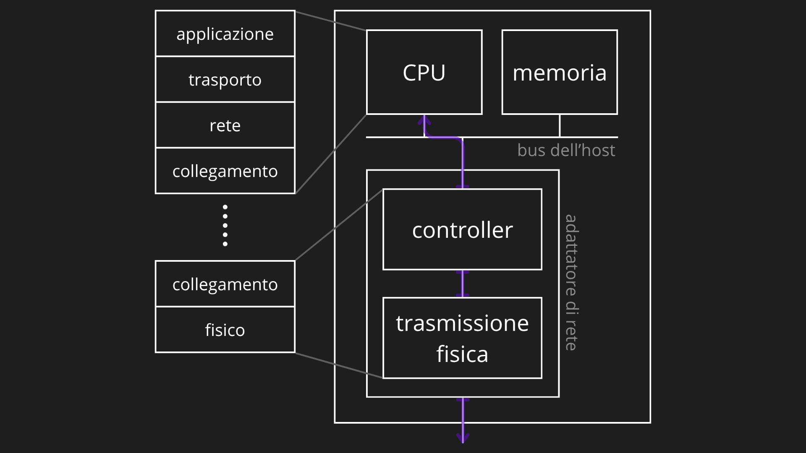
Negli host, il componente principale della scheda di rete è il controller del livello di collegamento (Link Layer Controller), un chip dedicato che realizza in hardware gran parte delle operazioni del livello di collegamento. Tra queste rientrano l’incapsulamento dei datagrammi in frame, il controllo dell’accesso al mezzo trasmissivo e il rilevamento degli errori. Oggi le schede di rete sono quasi sempre integrate direttamente nella scheda madre del dispositivo, anche se in passato erano spesso installate come schede di espansione. Sebbene la maggior parte delle funzionalità sia implementata in hardware, una parte del livello di collegamento è realizzata in software ed eseguita dalla CPU del sistema operativo. Il software si occupa principalmente delle funzioni di coordinamento, come la preparazione delle informazioni da inviare alla scheda di rete, la gestione degli interrupt generati dalla ricezione dei frame, il trattamento degli errori e la consegna dei datagrammi al livello di rete.
GESTIONE DEGLI ERRORI
Durante la trasmissione di un frame sul mezzo fisico, alcuni bit possono essere alterati a causa di rumore, interferenze o altri disturbi. Per questo motivo il livello di collegamento integra meccanismi che consentono di rilevare e, in alcuni casi, correggere gli errori presenti nei dati ricevuti. Tecniche analoghe sono utilizzate anche dal livello di trasporto, ma con obiettivi e modalità differenti.
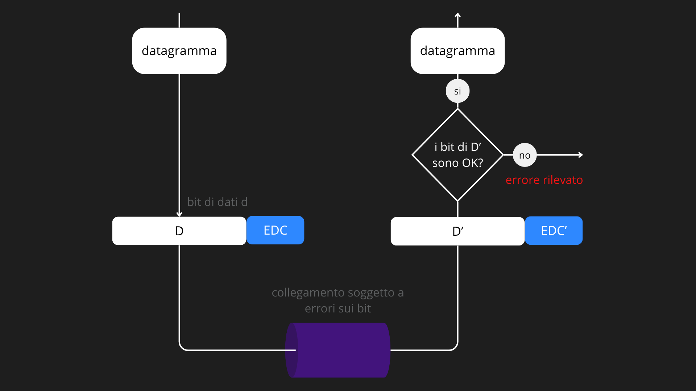
Per proteggere i dati, il nodo mittente aggiunge al frame alcune informazioni aggiuntive, chiamate EDC (Error Detection and Correction), calcolate a partire dal contenuto del frame. Questi bit vengono trasmessi insieme ai dati e permettono al destinatario di verificare se le informazioni ricevute coincidono con quelle inviate. Se durante la trasmissione alcuni bit vengono modificati, il ricevente confronta i dati ricevuti con gli EDC per stabilire se è presente un errore. Nei paragrafi successivi analizzeremo le principali tecniche impiegate per la rilevazione degli errori.
Controllo di parità
La tecnica più semplice per la rilevazione degli errori è il controllo di parità (Parity Check). In questo metodo il mittente aggiunge ai dati un bit di parità, il cui valore viene scelto in modo che il numero complessivo di bit a 1 sia pari (parity bit = 0) oppure dispari (parity bit = 1). Al ricevimento del frame, il destinatario conta il numero di bit a 1: se la parità non corrisponde a quella prevista dal parity bit, significa che durante la trasmissione si è verificato almeno un errore.
Warning
Questo metodo è efficace nel rilevare un numero dispari di errori, ma non è in grado di individuare un numero pari di bit alterati. Di conseguenza, se due, quattro o un altro numero pari di bit vengono modificati, il ricevente potrebbe considerare il frame corretto. Inoltre, nella pratica gli errori tendono spesso a verificarsi a raffiche (burst) e non come errori isolati, rendendo il controllo con un solo bit di parità poco affidabile.
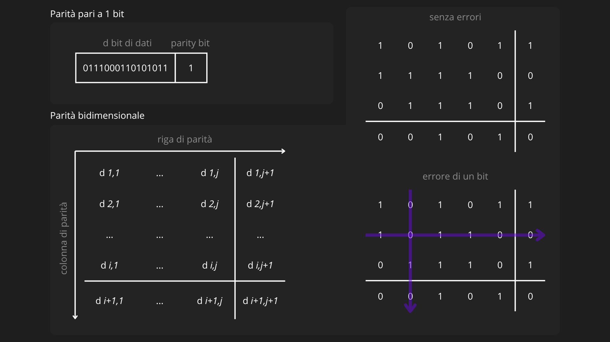
N.B. Nell’immagine vediamo che il bit che passa da 0 a 1 compromette sia la validità del parity bit della riga (dove rimangono tre bit a 1 ma il bit di parità è a 0), che quella della colonna (dove rimane un solo bit a 1 ma il bit di parità è a 0).
Per aumentare l’efficacia della tecnica si può utilizzare il controllo di parità bidimensionale. In questo caso i bit dei dati vengono organizzati in una matrice di righe e colonne e viene calcolato un bit di parità per ciascuna riga e per ciascuna colonna. Come mostrato nella figura di riferimento, se un solo bit viene alterato, la riga e la colonna che presentano un errore di parità permettono di individuare esattamente la posizione del bit corrotto e di correggerlo automaticamente.
Checksum
Il checksum è una tecnica di rilevazione degli errori utilizzata principalmente nei protocolli del livello di trasporto, come TCP e UDP. In questo metodo i dati vengono suddivisi in parole di dimensione fissa (nel caso di Internet, 16 bit) che vengono sommate tra loro. Il complemento a uno della somma ottenuta costituisce il valore del checksum, che viene inserito nell’intestazione del pacchetto.
Controllo a Ridondanza Ciclica
Il Controllo a Ridondanza Ciclica (CRC - Cyclic Redundancy Check) è una delle tecniche di rilevazione degli errori più affidabili ed è utilizzata nella maggior parte dei protocolli del livello di collegamento, come Ethernet. Il funzionamento del CRC si basa su un valore, concordato preventivamente tra mittente e destinatario, chiamato polinomio generatore (Generator, indicato con G). Supponiamo di dover trasmettere una sequenza di dati D. Il procedimento seguito dal mittente è il seguente:
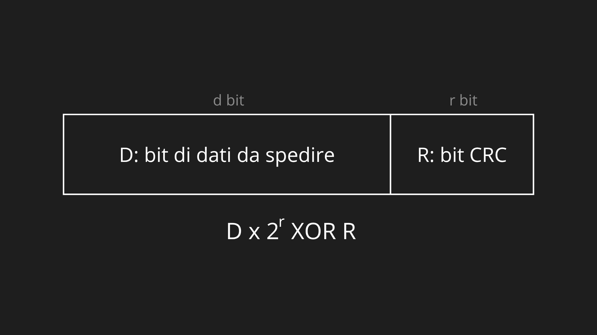
- sceglie il polinomio generatore G (uguale per mittente e destinatario),
- aggiunge r bit uguali a 0 alla fine dei dati, dove r è pari al numero di bit del CRC da calcolare (la sequenza D viene shiftata a sinistra r volte),
- divide questa nuova sequenza per G utilizzando l’aritmetica modulo 2 (cioè usando l’operazione XOR al posto della normale sottrazione),
- il resto della divisione costituisce il CRC, indicato con R,
- sostituisce gli zeri finali con R e trasmette il frame completo.
Il destinatario, una volta ricevuto il frame, esegue nuovamente la stessa divisione utilizzando lo stesso generatore G.
- Se il resto della divisione è uguale a 0, il frame viene considerato corretto.
- Se il resto è diverso da 0, significa che durante la trasmissione uno o più bit sono stati alterati e il frame viene scartato.
Esempio
Example
Supponiamo che:
D = 101110E che mittente e destinatario abbiano scelto come generatore
G = 1001Poiché G è lungo 4 bit, il CRC sarà lungo
r = 3 bitSi shifta D a sinistra di 3 posizioni, gli zeri derivanti dallo shift rappresentano semplicemente lo spazio che verrà occupato dal CRC.
101110 000A questo punto il mittente divide il numero ottenuto per G utilizzando la divisione binaria modulo 2, nella quale le sottrazioni vengono sostituite da operazioni XOR.
101110000 / 1001Il resto ottenuto è
R = 011Gli ultimi tre zeri vengono sostituiti con il resto appena calcolato. Questo è il frame realmente trasmesso.
Dati 101110000 + CRC 011 = -------------------- Frame 101110011Il destinatario riceve il frame e lo divide nuovamente per G
101110011 / 1001Se il resto della divisione è 000 allora il frame è considerato corretto (D + R / G da resto 0). Se invece il resto è diverso da 000, significa che durante la trasmissione uno o più bit sono stati alterati. Il destinatario conclude quindi che il frame contiene errori e lo scarta (oppure ne richiede la ritrasmissione, se previsto dal protocollo).
ACCESSO MULTIPLO
I collegamenti del livello di collegamento si dividono in collegamenti punto-punto e collegamenti broadcast. Nei collegamenti punto-punto la comunicazione avviene tra un solo mittente e un solo destinatario. Nei collegamenti broadcast, invece, più nodi condividono lo stesso mezzo trasmissivo: quando un nodo invia un frame, questo viene diffuso sul canale e tutti gli altri nodi collegati ne ricevono una copia. Tecnologie come Ethernet e le Wireless LAN sono esempi di reti che utilizzano collegamenti broadcast. La presenza di un canale condiviso introduce il problema dell’accesso multiplo, cioè stabilire come coordinare le trasmissioni dei diversi nodi affinché possano utilizzare il mezzo senza interferire tra loro.
Collisioni
Il principale problema dei collegamenti broadcast è rappresentato dalle collisioni. Se due o più nodi trasmettono contemporaneamente sullo stesso canale, i frame si sovrappongono rendendo impossibile la loro corretta interpretazione da parte dei destinatari. I frame coinvolti vengono quindi persi e parte della capacità del canale viene sprecata. Per questo motivo è necessario adottare meccanismi che coordinino le trasmissioni e riducano al minimo il verificarsi delle collisioni.
Protocolli ad accesso multiplo
I protocolli di accesso multiplo (Multiple Access Protocols) definiscono le regole che permettono ai nodi di utilizzare il mezzo trasmissivo in modo ordinato ed efficiente, stabilendo quando e come ciascun dispositivo può trasmettere. L’obiettivo è ridurre il numero di collisioni, sfruttare al meglio la capacità del canale e garantire una condivisione equa delle risorse tra tutti i nodi. I protocolli di accesso multiplo possono essere suddivisi in tre principali categorie.
Protocolli a suddivisione del canale
L’idea alla base dei protocolli a suddivisione del canale è evitare completamente le collisioni dividendo preventivamente il canale tra tutti i nodi. Ogni dispositivo riceve infatti una porzione esclusiva della capacità del collegamento e può trasmettere solamente all’interno della parte assegnata. Le principali tecniche sono TDM, FDM e CDMA.
Time Division Multiplexing (TDM)
Nel Time Division Multiplexing (TDM), la risorsa condivisa non è la frequenza ma il tempo. Il tempo viene suddiviso in slot periodici di breve durata, e a ciascuna comunicazione viene assegnato uno slot specifico all’interno di ogni ciclo. Durante il proprio slot, una comunicazione può utilizzare l’intera banda del mezzo trasmissivo, ma solo per quel breve intervallo di tempo. Al di fuori del proprio slot, la comunicazione non trasmette, e il mezzo è occupato dalle altre comunicazioni.
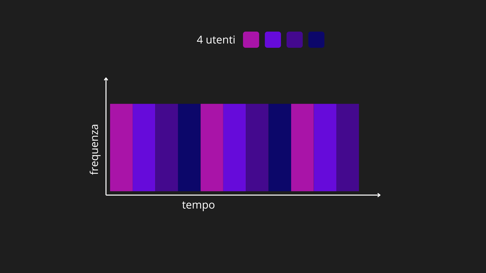
Elimina le collisioni, assegna la banda in modo perfettamente equo ed ogni nodo ottiene una velocità media pari a ( è il numero di comunicazioni in corso). Il principale limite è rappresentato dallo spreco della banda: se soltanto un nodo deve trasmettere, non può comunque utilizzare l’intera capacità del canale, ma deve attendere il proprio turno.
Frequency Division Multiplexing (FDM)
Nel Frequency Division Multiplexing (FDM), la banda complessiva del mezzo trasmissivo viene suddivisa in bande di frequenza distinte. A ciascuna comunicazione attiva viene assegnata una banda di frequenza esclusiva, all’interno della quale può trasmettere in modo continuo. Le diverse comunicazioni coesistono sullo stesso mezzo fisico senza interferirsi, poiché occupano porzioni diverse dello spettro di frequenza. La velocità massima di ciascuna comunicazione è limitata dalla larghezza della banda assegnatale.
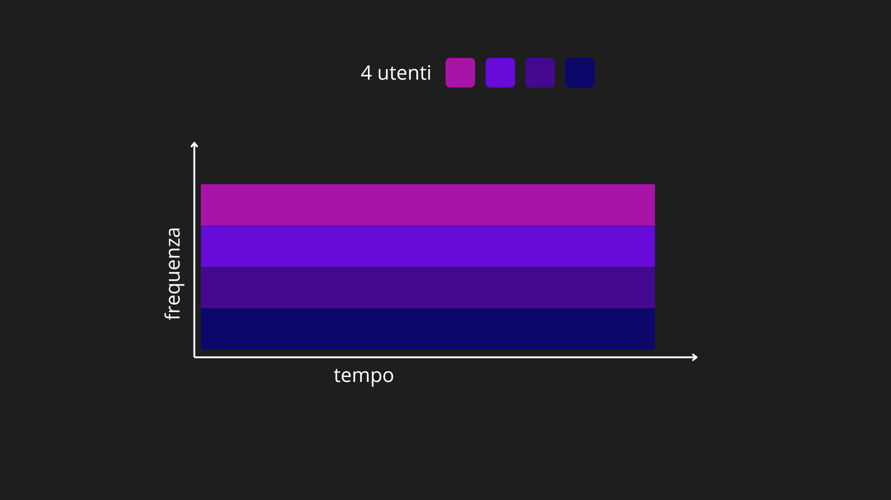
Elimina le collisioni e distribuisce equamente la banda. Tuttavia, se un solo nodo è attivo, continua comunque a poter utilizzare soltanto la propria banda , mentre il resto del canale rimane inutilizzato (come nel TDM).
Code Division Multiple Access (CDMA)
Nel Code Division Multiple Access (CDMA) il canale non viene diviso né nel tempo né nella frequenza. Ogni nodo riceve invece un codice univoco con cui codifica i dati prima della trasmissione. Tutti i nodi possono quindi trasmettere contemporaneamente sullo stesso canale. Il ricevente, conoscendo il codice del mittente, riesce a separare il segnale desiderato da quelli provenienti dagli altri nodi.
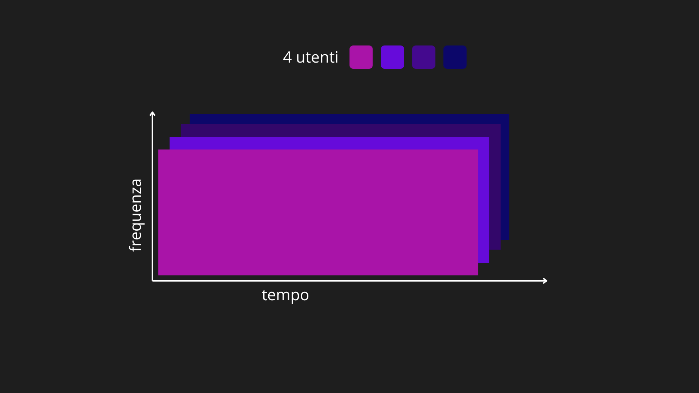
La caratteristica fondamentale del CDMA è quindi quella di consentire trasmissioni simultanee senza che i segnali si disturbino, purché vengano utilizzati codici opportunamente scelti. Dunque ogni singolo segnale ha a disposizione l’intera banda di frequenza per tutto il tempo della trasmissione, i segnali si sovrappongono ma vengono separati opportunamente all’arrivo.
Protocolli ad accesso casuale
A differenza dei protocolli a suddivisione del canale, nei protocolli ad accesso casuale non esiste alcuna assegnazione preventiva della banda. Ogni nodo è libero di trasmettere ogni volta che ha dati da inviare e utilizza l’intera capacità del canale ( bps). Questo approccio migliora notevolmente l’utilizzo della rete quando pochi nodi sono attivi, ma introduce il rischio che due o più trasmissioni inizino nello stesso momento, provocando una collisione. Quando una collisione si verifica, i nodi coinvolti non ritrasmettono immediatamente il frame, perché continuerebbero a collidere all’infinito. Ognuno aspetta invece un intervallo di tempo casuale (random delay) scelto indipendentemente dagli altri, dopodiché tenta una nuova trasmissione. Vediamo tre protocolli fondamentali appartenenti a questa categoria.
Slotted ALOHA
Slotted ALOHA introduce una semplice regola: il tempo viene diviso in slot, ciascuno lungo esattamente quanto la trasmissione di un frame. Il protocollo assume che:
- tutti i frame abbiano la stessa lunghezza ,
- gli slot abbiano durata secondi,
- tutti i nodi siano sincronizzati,
- una trasmissione possa iniziare esclusivamente all’inizio di uno slot,
- eventuali collisioni vengano rilevate entro la fine dello slot.
Quando un nodo riceve un nuovo frame, aspetta l’inizio dello slot successivo. Appena inizia lo slot il nodo trasmette l’intero frame. Se a seguito della trasmissione non avviene alcuna collisione, la trasmissione termina con successo, altrimenti il nodo la rileva e decide casualmente quando riprovare.
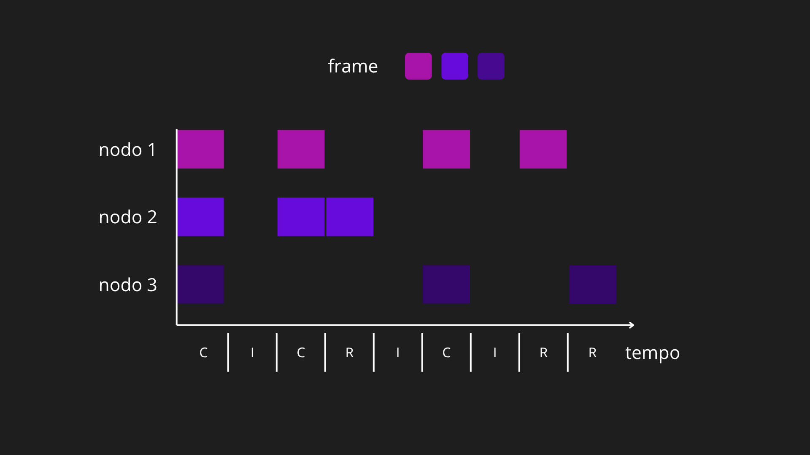
Quando un solo nodo è attivo può utilizzare tutta la capacità del canale e il protocollo è inoltre decentralizzato: ogni nodo prende autonomamente le proprie decisioni. Tuttavia molti slot risultano vuoti perché nessun nodo decide di trasmettere o persi per collisione quando più nodi scelgono lo stesso slot. Solo gli slot in cui trasmette un unico nodo risultano realmente utili (successful slot).
ALOHA Puro
ALOHA puro rappresenta l’antenato più semplice e decentralizzato dello Slotted ALOHA. A differenza di quest’ultimo, non divide il tempo in slot sincronizzati: ogni nodo trasmette il frame immediatamente appena è disponibile, senza attendere un istante prestabilito. Se si verifica una collisione, il nodo completa comunque la trasmissione, quindi attende un intervallo casuale prima di ritentare l’invio.
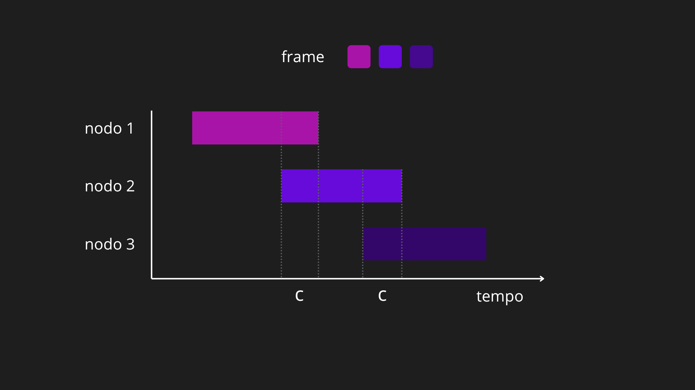
Questa assenza di sincronizzazione rende il protocollo più semplice e completamente decentralizzato, ma aumenta notevolmente la probabilità di collisione. Infatti, mentre nello Slotted ALOHA una collisione può avvenire solo se due nodi trasmettono all’inizio dello stesso slot, in ALOHA puro un frame può collidere sia con uno iniziato poco prima sia con uno iniziato poco dopo, raddoppiando la finestra temporale di vulnerabilità.
Carrier Sense Multiple Access (CSMA)
Il protocollo CSMA (Carrier Sense Multiple Access), al contrario dei protocolli ALOHA, prima di trasmettere, un nodo ascolta il canale. Il funzionamento di CSMA si basa sul rilevamento della portante (carrier sensing). Quando un nodo deve inviare un frame, controlla se il canale è già occupato da un’altra trasmissione. Se il canale è libero, inizia immediatamente a trasmettere, se invece è occupato, rimane in attesa finché non rileva che la trasmissione è terminata. Tuttavia, sebbene tutti i nodi ascoltino il canale prima di trasmettere, le collisioni non vengono eliminate completamente. La causa è il ritardo di propagazione del segnale: quanto maggiore è il tempo necessario affinché un segnale raggiunga tutti i nodi, tanto maggiore è la probabilità che due dispositivi inizino a trasmettere quasi contemporaneamente senza essere a conoscenza l’uno dell’altro.
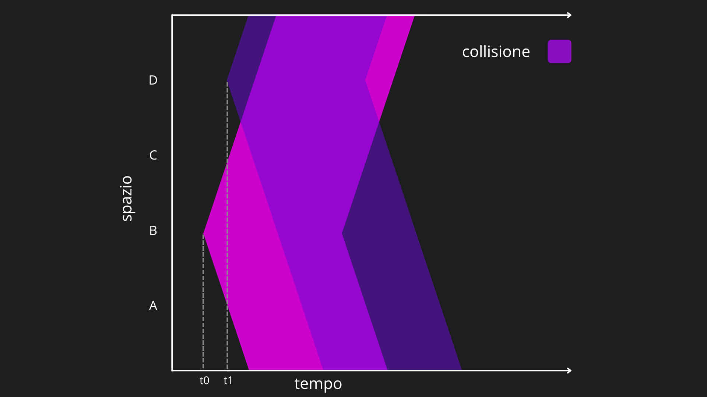
Example
L’esempio chiarisce questo fenomeno mediante un diagramma spazio-temporale. L’asse orizzontale rappresenta la posizione dei nodi sul canale condiviso, mentre quello verticale rappresenta il tempo. Al tempo t0 il nodo B verifica che il canale è libero e inizia la trasmissione. I suoi bit iniziano a propagarsi lungo il mezzo trasmissivo, ma questa propagazione richiede un tempo finito, sebbene il segnale viaggi a una velocità molto elevata. Successivamente, al tempo t1 > t0, anche il nodo D deve trasmettere un frame. In quell’istante i bit inviati da B non hanno ancora raggiunto D, di conseguenza D percepisce ancora il canale come libero e, rispettando il protocollo CSMA, inizia anch’esso a trasmettere. Solo dopo un breve intervallo le due trasmissioni si incontrano sul canale e si verifica la collisione.
Carrier Sense Multiple Access with Collision Detection (CSMA/CD)
Per ridurre ulteriormente lo spreco di banda è stato introdotto il protocollo CSMA/CD (Carrier Sense Multiple Access with Collision Detection), che aggiunge al semplice ascolto del canale anche la rilevazione delle collisioni. Il funzionamento di una scheda di rete CSMA/CD può essere riassunto con i seguenti passaggi:
- riceve un datagramma dal livello di rete e costruisce il frame del livello di collegamento,
- ascolta il canale: se lo trova libero inizia la trasmissione, se è occupato aspetta,
- durante tutta la trasmissione continua a monitorare il canale,
- se non rileva interferenze completa normalmente la trasmissione, se invece rileva una collisione interrompe immediatamente l’invio del frame,
- attende un intervallo di tempo casuale e successivamente ripete la procedura.
L’interruzione immediata della trasmissione permette di ridurre sensibilmente il tempo durante il quale il canale rimane occupato da dati ormai inutilizzabili.
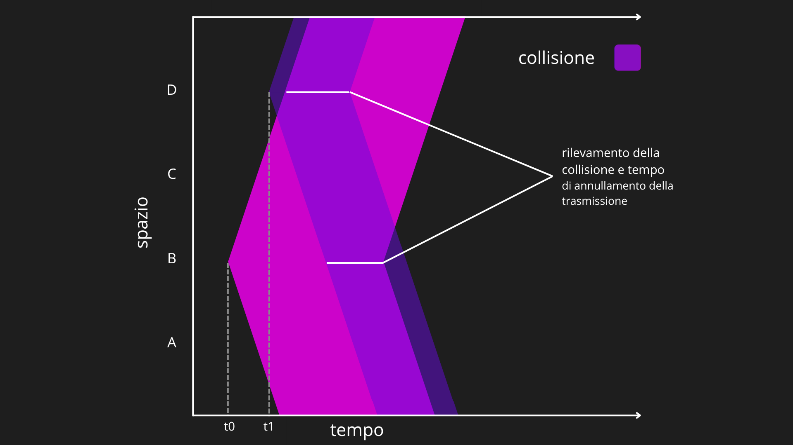
Example
Con il CSMA i nodi B e D continuano a trasmettere anche dopo che la collisione si è verificata, sprecando tempo e capacità del canale. Il nuovo esempio mostra invece il comportamento di CSMA/CD: appena un nodo si accorge che la propria trasmissione sta interferendo con quella di un altro nodo, interrompe immediatamente l’invio del frame, evitando di occupare inutilmente il canale.
Tempo di backoff e attesa binaria esponenziale
Dopo una collisione i nodi non possono ritentare immediatamente la trasmissione. Se tutti riprovassero nello stesso istante, si verificherebbe una nuova collisione. Per questo motivo ogni nodo aspetta un tempo casuale, detto tempo di backoff, prima di ritentare la trasmissione. La scelta della durata del backoff è fondamentale:
- se è troppo lunga, il canale rimane inutilizzato anche quando potrebbe trasmettere,
- se è troppo breve, aumenta la probabilità che gli stessi nodi collidano nuovamente.
Per risolvere questo problema Ethernet utilizza l’algoritmo di binary exponential backoff (attesa binaria esponenziale). L’idea è molto semplice: più collisioni consecutive subisce un frame, maggiore diventa l’intervallo casuale entro cui scegliere il tempo di attesa.
Se un frame ha subìto l’n-esima collisione, il nodo sceglie casualmente un valore con e aspetta un tempo pari alla trasmissione di prima di ritentare.
Example
- prima collisione: viene scelto tra ,
- seconda collisione: viene scelto tra ,
- terza collisione: viene scelto tra ,
- dopo dieci o più collisioni, viene scelto tra .
Ad ogni collisione il numero di valori possibili raddoppia, aumentando progressivamente il tempo medio di attesa e riducendo la probabilità che gli stessi nodi collidano ancora.
Protocolli a rotazione
I protocolli a rotazione (taking-turn protocols) sono stati introdotti per superare un limite dei protocolli ad accesso casuale, come ALOHA e CSMA. Questi ultimi permettono infatti a un unico nodo attivo di utilizzare tutta la capacità del canale ( bps), ma quando più nodi devono trasmettere contemporaneamente non riescono a garantire che ciascuno ottenga una quota equa della banda (circa , dove è il numero di nodi attivi). I protocolli a rotazione cercano quindi di organizzare l’accesso al canale in modo ordinato, facendo sì che ogni nodo trasmetta quando arriva il proprio turno. In questo modo vengono eliminate le collisioni e si ottiene una distribuzione più equa della capacità del canale.
Protocollo Polling
Il primo esempio di protocollo a rotazione è il polling. In questo caso esiste un nodo principale (master) che controlla completamente l’accesso al canale. Il suo compito è interrogare ciclicamente tutti gli altri nodi della rete, autorizzandoli uno alla volta a trasmettere. Il funzionamento è semplice: il nodo principale invia un messaggio al primo nodo comunicandogli che può trasmettere fino a un determinato numero massimo di frame. Terminata la trasmissione, il nodo principale rileva che il canale è tornato libero (cioè non riceve più alcun segnale) e concede il turno al nodo successivo. La procedura continua nello stesso modo fino all’ultimo nodo, dopodiché il ciclo ricomincia dal primo. L’assenza di collisioni e di slot inutilizzati rende il protocollo molto efficiente rispetto ai protocolli ad accesso casuale. Tuttavia presenta due importanti svantaggi. Il primo è il ritardo di polling, cioè il tempo necessario affinché il nodo principale raggiunga il nodo che deve trasmettere. Anche se un solo nodo ha dati da inviare, questo non può trasmettere continuamente alla velocità massima del canale, perché il nodo principale deve comunque interrogare tutti gli altri nodi, anche quelli inattivi. Il secondo svantaggio è rappresentato dal fatto che il nodo principale costituisce un punto singolo di guasto: se smette di funzionare, l’intero sistema rimane bloccato.
Protocollo Token-Passing
Un secondo protocollo a rotazione è il token-passing (passaggio del gettone). Diversamente dal polling, qui non esiste alcun nodo principale. Il controllo del canale è affidato a uno speciale frame di controllo chiamato token (gettone), che viene fatto circolare continuamente tra tutti i nodi seguendo un ordine prefissato. Ad esempio, il nodo 1 passa sempre il token al nodo 2, il nodo 2 al nodo 3 e così via fino all’ultimo nodo, che lo restituisce al primo, ricominciando il ciclo. Solo il nodo che possiede il token è autorizzato a trasmettere. Quando un nodo riceve il token può trovarsi in due situazioni:
- Se non ha dati da trasmettere, inoltra immediatamente il token al nodo successivo.
- Se invece ha frame da inviare, trasmette fino al numero massimo consentito e, una volta terminata la trasmissione, passa il token al nodo seguente.
Anche questo protocollo elimina completamente le collisioni e distribuisce equamente l’accesso al canale. Inoltre è decentralizzato, poiché non dipende da un nodo principale. Rimangono però alcuni problemi pratici: il guasto di un nodo può interrompere la circolazione del token e bloccare la rete, oppure il token stesso può andare perso, rendendo necessarie specifiche procedure di recupero per rigenerarlo e rimetterlo in circolazione.
SWITCHED LAN
Le reti locali commutate (switched LAN) sono reti locali in cui i dispositivi non condividono un unico mezzo trasmissivo, come accade nelle reti broadcast, ma comunicano attraverso switch. Ogni frame viene quindi inoltrato dallo switch solo verso il destinatario corretto, anziché essere diffuso a tutti i nodi della rete.
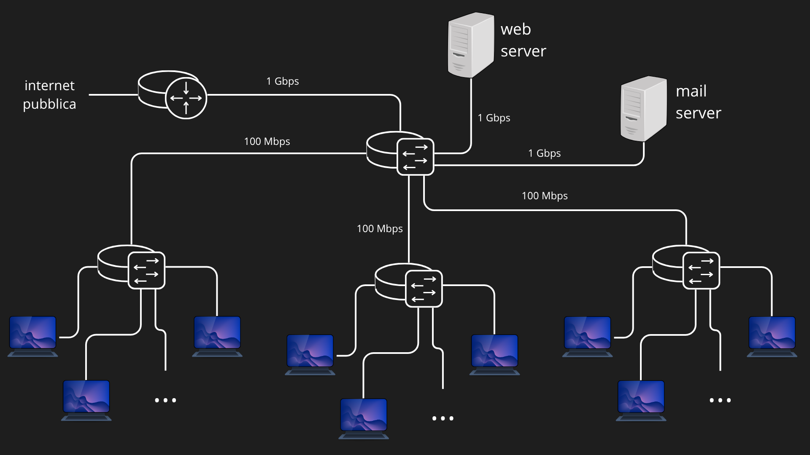
Per consentire la comunicazione all’interno di una rete locale, i nodi utilizzano due tipi di indirizzi: gli indirizzi IP, che appartengono al livello di rete, e gli indirizzi MAC, che appartengono al livello di collegamento. La presenza di entrambi può sembrare ridondante, ma ognuno svolge un compito diverso e indispensabile. Gli indirizzi IP identificano un nodo all’interno di Internet e vengono utilizzati per instradare i datagrammi tra reti diverse, mentre gli indirizzi MAC servono per consegnare correttamente i frame all’interno della singola rete locale. Per collegare questi due livelli interviene il protocollo ARP (Address Resolution Protocol), che permette di ricavare l’indirizzo MAC corrispondente a un determinato indirizzo IP.
Indirizzi MAC
Gli indirizzi MAC non appartengono direttamente agli host o ai router, ma alle schede di rete (interfacce di rete). Di conseguenza, un host o un router dotato di più interfacce possiede un indirizzo MAC diverso per ciascuna di esse, analogamente a quanto avviene con gli indirizzi IP. Gli switch, invece, pur operando a livello di collegamento, non utilizzano indirizzi MAC sulle proprie porte per il trasporto dei frame, poiché il loro funzionamento è completamente trasparente agli host e ai router.
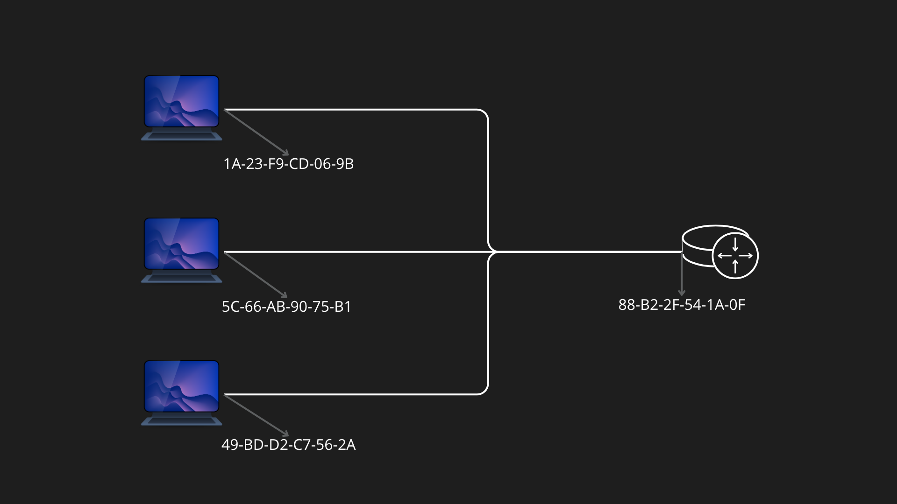
Gli indirizzi MAC, chiamati anche indirizzi fisici o indirizzi LAN, sono generalmente lunghi 48 bit (6 byte) e vengono rappresentati in notazione esadecimale. ISono permanenti e assegnati dal costruttore della scheda di rete, anche se oggi possono essere modificati via software. Una loro caratteristica fondamentale è l’unicità: non esistono due schede di rete con lo stesso indirizzo MAC. Questo è possibile perché l’IEEE gestisce l’assegnazione degli indirizzi, riservando a ciascun produttore un blocco di indirizzi all’interno del quale esso può assegnare un valore diverso a ogni scheda prodotta. A differenza degli indirizzi IP, gli indirizzi MAC hanno una struttura piatta, cioè non contengono alcuna informazione sulla rete di appartenenza e non cambiano quando un dispositivo viene spostato da una rete a un’altra. Quando una scheda di rete trasmette un frame, inserisce al suo interno il MAC di destinazione. Ogni scheda che riceve il frame controlla questo indirizzo: se coincide con il proprio, estrae il datagramma IP contenuto nel frame e lo consegna ai livelli superiori, in caso contrario il frame viene semplicemente scartato.
Tip
Esiste anche uno speciale indirizzo MAC di broadcast, costituito da tutti bit uguali a 1 (FF-FF-FF-FF-FF-FF). Un frame inviato a questo indirizzo viene ricevuto ed elaborato da tutte le schede di rete presenti nella LAN.
Protocollo ARP
Poiché un host conosce normalmente l’indirizzo IP del destinatario ma deve trasmettere utilizzando il suo indirizzo MAC, è necessario un meccanismo che permetta di effettuare questa conversione. Questo compito è svolto dal protocollo ARP (Address Resolution Protocol). Il modulo ARP riceve quindi in ingresso l’indirizzo IP e restituisce il corrispondente indirizzo MAC.
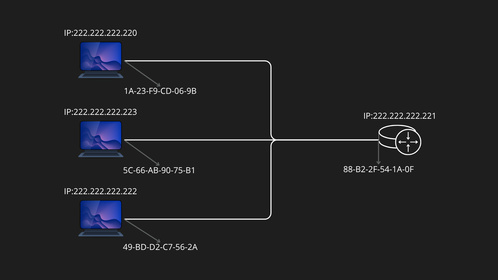
Caution
ARP funziona esclusivamente all’interno della stessa sottorete. Se si tenta di risolvere tramite ARP l’indirizzo IP di un nodo appartenente a un’altra rete, il protocollo non è in grado di farlo.
Tabella ARP
Ogni nodo mantiene nella propria memoria una tabella ARP, contenente le associazioni tra indirizzi IP e indirizzi MAC già conosciute. Ogni voce della tabella possiede anche un TTL (Time To Live) che indica per quanto tempo tale associazione può essere considerata valida. Trascorso questo tempo, la voce viene eliminata automaticamente.
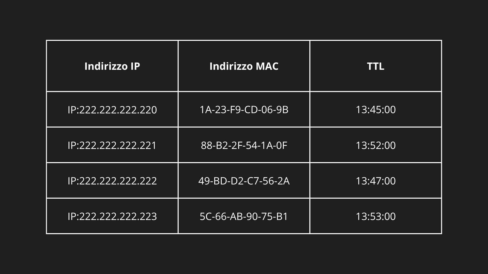
La tabella non contiene necessariamente tutti i nodi della sottorete: alcune associazioni possono essere scadute oppure non essere mai state utilizzate.
Risoluzione degli indirizzi MAC
Quando un host deve inviare un datagramma e nella propria tabella ARP non trova il MAC corrispondente all’indirizzo IP desiderato, avvia la procedura di risoluzione degli indirizzi. Il nodo costruisce un pacchetto ARP di richiesta, che contiene sia gli indirizzi IP sia quelli MAC del mittente e del destinatario. Questo pacchetto viene incapsulato in un frame avente come indirizzo MAC di destinazione il broadcast (FF-FF-FF-FF-FF-FF), in modo che venga ricevuto da tutti gli host della LAN. Ogni nodo della sottorete riceve il frame broadcast e controlla se l’indirizzo IP richiesto coincide con il proprio. Solo il nodo corrispondente invia una risposta ARP (unicast), comunicando il proprio indirizzo MAC al mittente. Il nodo richiedente aggiorna quindi la propria tabella ARP con la nuova associazione IP-MAC e può finalmente costruire il frame contenente il datagramma IP destinato all’host corretto.
Info
Il protocollo ARP è plug-and-play: la tabella ARP viene costruita automaticamente senza alcun intervento dell’amministratore della rete e viene aggiornata dinamicamente quando i nodi entrano o escono dalla sottorete.
ARP tra sottoreti diverse
Il funzionamento di ARP cambia quando il destinatario appartiene a una sottorete diversa. Quando si vuole inviare un datagramma verso un host appartenente ad una sottorete diversa potrebbe sembrare naturale utilizzare direttamente il MAC dell’host finale, ma ciò sarebbe errato. Tale indirizzo MAC non appartiene infatti ad alcun dispositivo presente nella sottorete del mittente e quindi nessuna scheda di rete lo riconoscerebbe, il frame verrebbe scartato. Il primo destinatario reale del frame deve essere invece l’interfaccia del router appartenente alla stessa sottorete del mittente, cioè il gateway.
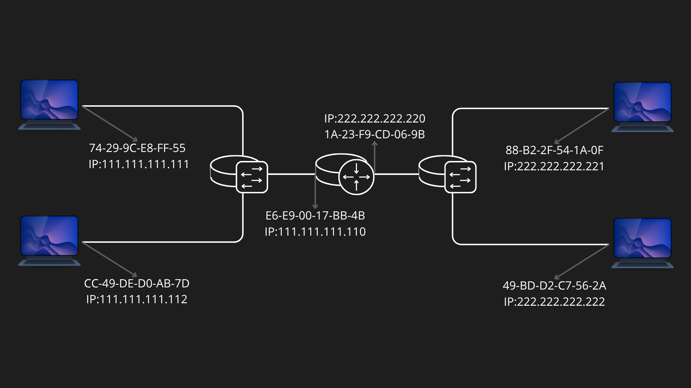
Example
Consideriamo l’esempio di due sottoreti collegate da un router. Un host della prima sottorete (111.111.111.111) vuole inviare un datagramma a un host della seconda (222.222.222.222). Il mittente utilizza ARP per ottenere il MAC dell’interfaccia del gateway. Una volta ottenuto tale indirizzo, il mittente costruisce un frame avente come destinazione il MAC del router e gli consegna il datagramma IP. Il router riceve il frame, estrae il datagramma IP, consulta la propria tabella di instradamento per individuare l’interfaccia di uscita corretta e incapsula il datagramma in un nuovo frame, questa volta destinato alla seconda sottorete. Se necessario, utilizza nuovamente ARP per ottenere il MAC dell’host finale e invia il nuovo frame verso il destinatario. In questo modo ARP viene utilizzato solo all’interno di ogni singola sottorete, mentre il router si occupa del trasferimento del datagramma tra reti differenti.
Tabella di commutazione (Switch Table)
Ogni switch mantiene anche una tabella di commutazione, che associa gli indirizzi MAC alle proprie interfacce. Ogni voce contiene l’indirizzo MAC, la porta dello switch su cui è raggiungibile il dispositivo e un timestamp utilizzato per l’aging.
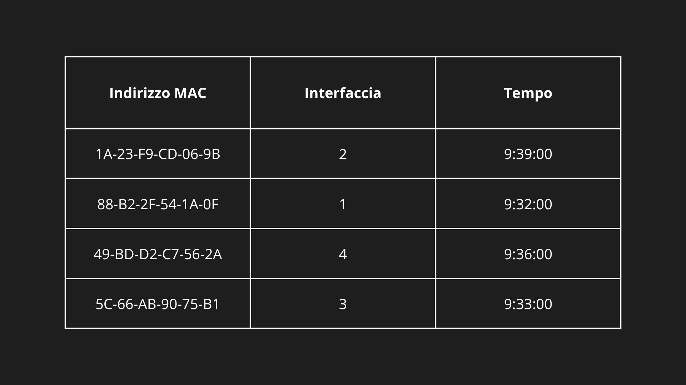
La tabella viene costruita automaticamente tramite autoapprendimento, osservando l’indirizzo MAC sorgente dei frame ricevuti, ed è utilizzata per eseguire le operazioni di filtraggio e inoltro dei frame.
ETHERNET
Ethernet è il principale protocollo di livello di collegamento utilizzato nelle reti LAN cablate. Nelle reti Ethernet moderne gli host sono collegati a uno switch tramite collegamenti punto-punto, mentre il trasferimento dei dati avviene mediante frame Ethernet. Gli switch operano a livello 2, inoltrando i frame sulla base degli indirizzi MAC senza analizzare gli indirizzi IP.
Frame Ethernet
Il frame Ethernet è l’unità di trasmissione del livello di collegamento e incapsula generalmente un datagramma IP (ma può trasportare anche altri protocolli di rete). È composto dai seguenti campi:
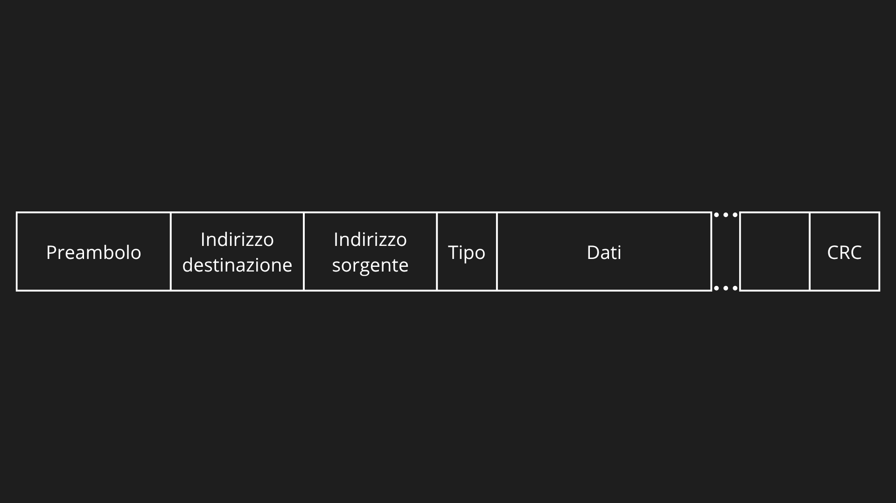
- Preambolo (8 byte): serve a sincronizzare il clock del ricevente con quello del trasmittente. Il clock deve essere sincronizzato perché trasmettitore e ricevitore devono interpretare i bit negli stessi istanti di tempo.
- Indirizzo MAC di destinazione (6 byte): identifica la scheda di rete destinataria. Il frame viene accettato solo se il MAC coincide con quello del ricevente oppure con l’indirizzo broadcast, altrimenti viene scartato.
- Indirizzo MAC sorgente (6 byte): contiene l’indirizzo MAC della scheda di rete che ha trasmesso il frame.
- Campo Tipo (2 byte): indica quale protocollo di livello superiore è trasportato nel campo dati (ad esempio IPv4, IPv6 o ARP), permettendo al ricevente di consegnare i dati al protocollo corretto.
- Campo dati (46–1500 byte): contiene il datagramma IP. Se il datagramma supera i 1500 byte (MTU di Ethernet) deve essere frammentato, se è inferiore a 46 byte, viene aggiunto del padding per raggiungere la dimensione minima.
- CRC (4 byte): contiene il codice di controllo a ridondanza ciclica (CRC), utilizzato per rilevare eventuali errori di trasmissione del frame.
Tipologia di servizio
Ethernet offre un servizio connectionless e non affidabile. La trasmissione dei frame avviene senza instaurare preventivamente una connessione tra mittente e destinatario e non sono previsti meccanismi di acknowledgement o ritrasmissione a livello di collegamento. Il destinatario verifica soltanto il valore del CRC: se il controllo fallisce, il frame viene scartato. L’eventuale recupero delle perdite è demandato ai protocolli di livello superiore, come TCP, mentre con UDP la perdita viene direttamente osservata dall’applicazione.
Tecnologie Ethernet
Le tecnologie Ethernet sono definite dagli standard IEEE 802.3 e si distinguono attraverso una nomenclatura che indica velocità, tipo di trasmissione e mezzo fisico. Ad esempio, in 100BASE-T il numero indica la velocità (100 Mbps), BASE indica la trasmissione in banda base e T identifica il doppino intrecciato, altre sigle possono indicare la fibra ottica o altri mezzi trasmissivi.
Important
Le reti Ethernet moderne utilizzano quasi esclusivamente una topologia a stella con switch e collegamenti punto a punto. In questa architettura non si verificano collisioni, gli switch operano in modalità store-and-forward e i collegamenti possono funzionare in full-duplex, consentendo trasmissione e ricezione simultanee. Di conseguenza, il protocollo CD, necessario nelle vecchie Ethernet broadcast con hub, è oggi generalmente superfluo. Nonostante l’evoluzione delle velocità e dei mezzi trasmissivi, tutte le versioni di Ethernet mantengono lo stesso formato di frame, garantendo la compatibilità tra gli standard.
VIRTUAL LAN (VLAN)
Le VLAN (Virtual Local Area Network) sono reti locali logiche create all’interno della stessa infrastruttura fisica di rete. Consentono di suddividere un unico switch in più reti virtuali indipendenti, facendo sì che gli host appartenenti alla stessa VLAN comunichino tra loro come se fossero collegati a uno switch dedicato. Ogni VLAN costituisce un dominio di broadcast separato, per cui i frame broadcast vengono confinati all’interno della VLAN e non raggiungono gli host delle altre VLAN. Questo permette di migliorare l’isolamento del traffico, la sicurezza, l’utilizzo delle porte degli switch e la gestione della rete.
VLAN sulle porte
Nelle VLAN basate sulle porte, l’amministratore assegna ciascuna porta dello switch a una determinata VLAN. Lo switch mantiene una tabella che associa le porte alle rispettive VLAN e inoltra i frame esclusivamente tra porte appartenenti alla stessa VLAN. Se un host cambia reparto, è sufficiente modificare l’associazione della sua porta tramite software, senza intervenire sul cablaggio.
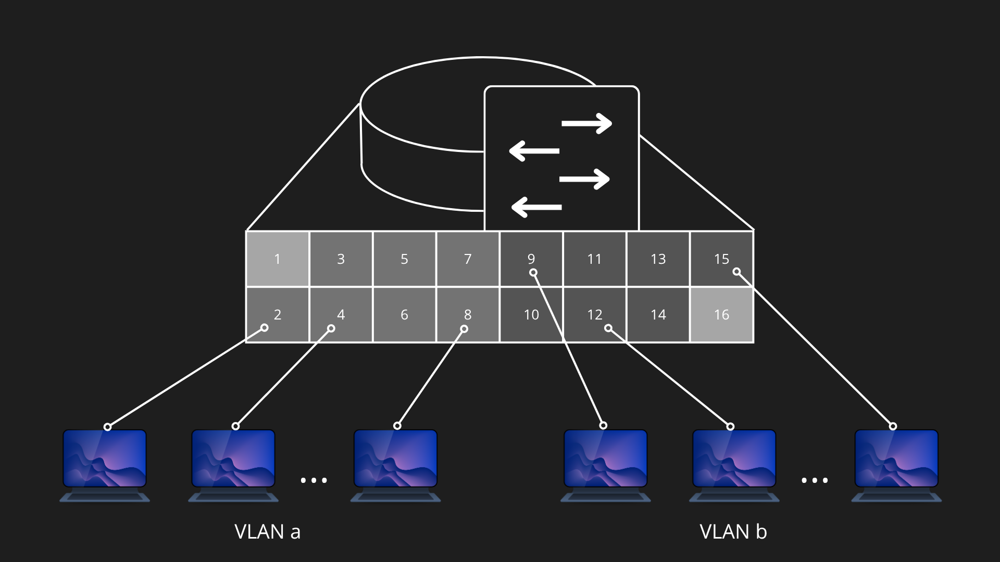
Example
L’esempio mostra un singolo switch con 16 porte. Le porte dalla 2 alla 8 appartengono alla VLAN a, mentre la porte dalla 9 alla 15 appartengono alla VLAN b. Notare che la porta 1 e la porta 16 non sono state assegnate ad alcuna VLAN.
Comunicazione tra VLAN diverse
L’isolamento delle VLAN impedisce la comunicazione diretta tra host appartenenti a VLAN diverse. Per consentire lo scambio di traffico tra VLAN è necessario il routing inter-VLAN, effettuato da un router esterno oppure, più comunemente, da uno switch Layer 3, che integra funzionalità di switch e router nello stesso dispositivo.
VLAN trunking
Quando una stessa VLAN è distribuita su più switch, questi vengono collegati tramite un trunk VLAN. Il trunk è un collegamento che trasporta contemporaneamente il traffico di più VLAN diverse tra gli switch.
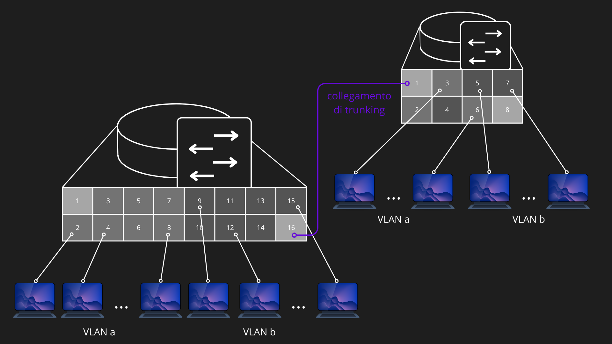
Per identificare a quale VLAN appartiene ciascun frame, viene utilizzato lo standard IEEE 802.1Q, che aggiunge al frame Ethernet un tag VLAN di 4 byte contenente principalmente l’identificativo della VLAN (VLAN ID) e un campo di priorità. Il tag viene inserito dallo switch trasmittente e rimosso da quello ricevente.
CANALI VIRTUALI E MPLS
Il Multiprotocol Label Switching (MPLS) è una tecnologia che permette di considerare un’intera rete come se fosse un unico collegamento logico tra router IP. Pur utilizzando una rete composta da più router, dal punto di vista dei dispositivi esterni essa si comporta come un semplice canale di livello di collegamento. MPLS combina caratteristiche delle reti a datagramma IP e delle reti a circuito virtuale, introducendo un sistema di inoltro basato su etichette (label) invece che sugli indirizzi IP.
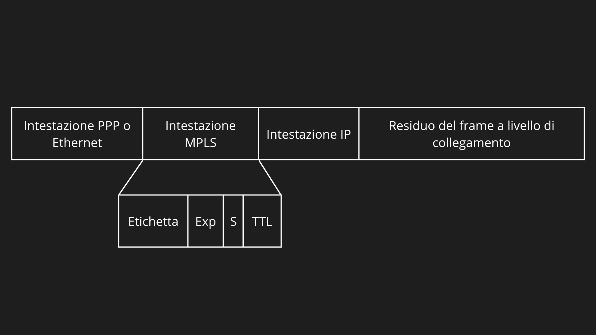
Nei collegamenti MPLS viene inserita una intestazione MPLS tra l’intestazione del livello di collegamento (ad esempio Ethernet) e quella IP. L’elemento principale dell’intestazione è la label (etichetta), che identifica il percorso da seguire all’interno della rete MPLS. Sono inoltre presenti un campo TTL, un bit per indicare la fine della pila di etichette (stack) e alcuni bit riservati. I router MPLS, detti Label Switched Router (LSR), inoltrano i pacchetti consultando esclusivamente la label, senza analizzare l’indirizzo IP di destinazione.
Forwarding MPLS
I router MPLS si scambiano informazioni sulle etichette associate ai diversi percorsi e costruiscono così dei Label Switched Path (LSP), cioè percorsi virtuali prestabiliti lungo cui instradare i pacchetti. Questo permette di attraversare l’intera rete MPLS senza dover effettuare, a ogni hop, la ricerca del prefisso IP più lungo come avviene nell’instradamento IP tradizionale.
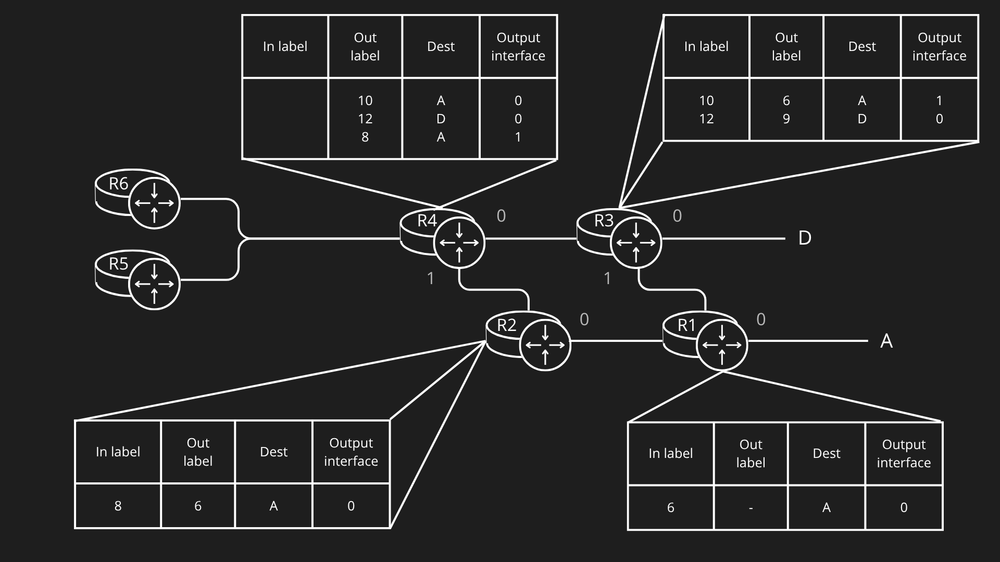
N.B. i router R1, R2, R3 e R4 si scambiano le informazioni fino a destinazione senza mai esaminare gli indirizzi IP dei pacchetti, utilizzando solo le etichette.
Il principale vantaggio di MPLS non è tanto l’aumento della velocità di inoltro, quanto la traffic engineering. Grazie alle etichette è possibile instradare il traffico su percorsi scelti dall’amministratore di rete, anche se non corrispondono al percorso più breve individuato dai protocolli IP. In questo modo si possono bilanciare i carichi, evitare congestioni, predisporre percorsi alternativi in caso di guasti e implementare servizi avanzati come le Virtual Private Network (VPN), mantenendo separate le reti dei diversi clienti all’interno della stessa infrastruttura del provider.
RETI DEI DATA CENTER
I data center sono grandi infrastrutture che ospitano da decine a centinaia di migliaia di server, utilizzate per fornire servizi cloud come motori di ricerca, e-mail, social network ed e-commerce. Al loro interno è presente una data center network, che collega tra loro tutti gli host e li connette a Internet. Sebbene la rete rappresenti solo una parte del costo complessivo del data center, è fondamentale per garantire elevate prestazioni e ridurre i costi operativi.
Architettura dei data center
Gli host sono organizzati in rack, ciascuno collegato a uno switch Top-of-Rack (TOR), che mette in comunicazione i server del rack con il resto della rete. La rete del data center gestisce sia il traffico proveniente dai client esterni sia quello interno tra i server. I client accedono ai servizi tramite router di confine (border router), mentre un load balancer distribuisce le richieste ai server meno occupati, bilanciando il carico di lavoro e nascondendo la struttura interna della rete traducendo gli indirizzi IP.
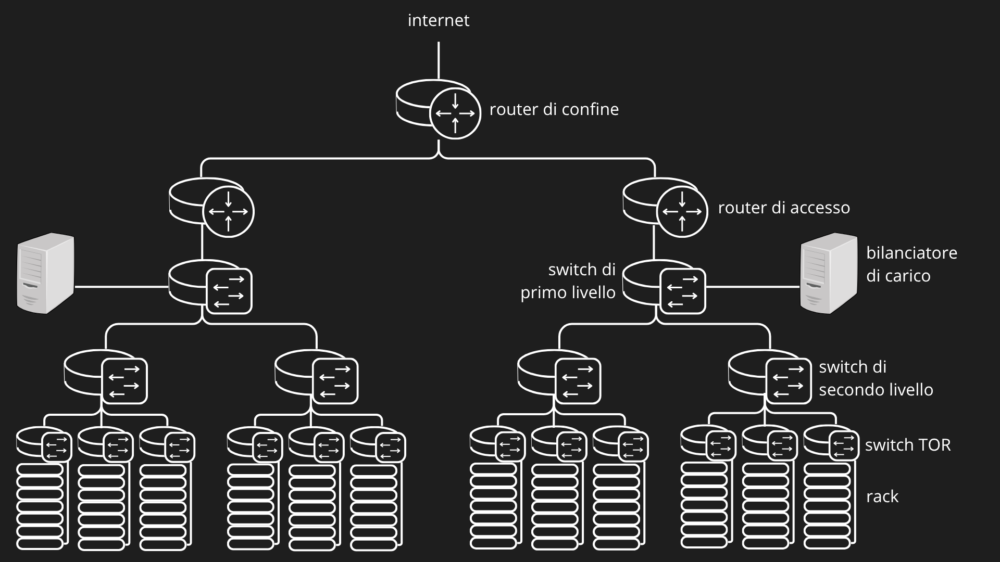
Per supportare un numero molto elevato di server, i data center adottano generalmente un’architettura gerarchica, composta da più livelli di router e switch. Questa soluzione è altamente scalabile e permette di espandere facilmente l’infrastruttura, ma presenta un limite: quando molti server comunicano contemporaneamente tra rack differenti, i collegamenti tra gli switch possono diventare colli di bottiglia, riducendo la banda disponibile per ciascun flusso.
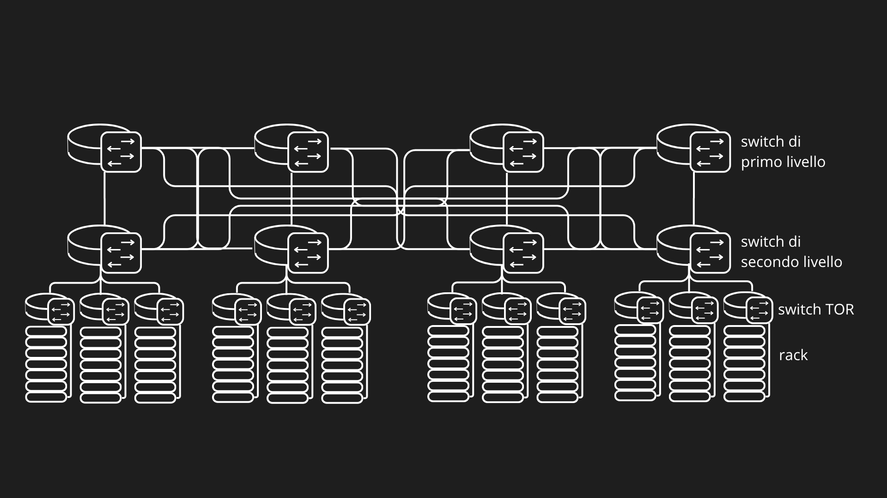
Per superare tali limiti, i grandi provider stanno sviluppando nuove architetture di rete. Una delle principali tendenze consiste nell’utilizzare topologie altamente connesse, in cui esistono numerosi percorsi alternativi tra gli switch, aumentando la banda disponibile e migliorando le prestazioni della comunicazione tra server. Un’altra evoluzione è rappresentata dai Modular Data Center (MDC), costituiti da container prefabbricati contenenti migliaia di server, facilmente trasportabili e sostituibili. Inoltre, i principali operatori del cloud progettano sempre più componenti hardware e software personalizzati e migliorano l’affidabilità dei servizi tramite availability zones, cioè data center replicati in edifici distinti che garantiscono continuità operativa anche in caso di guasti.
RETI WIRELESS
Dal punto di vista dei livelli di rete e superiori, una rete wireless si comporta in modo analogo a una rete Ethernet cablata: la scheda di rete wireless sostituisce la scheda Ethernet e l’access point svolge un ruolo simile a quello dello switch. Le principali differenze si trovano invece nel livello di collegamento, dove la trasmissione avviene tramite onde radio anziché attraverso un mezzo fisico.
Problemi dell comunicazione wireless
Le comunicazioni wireless sono soggette a diversi fenomeni che degradano il segnale. Il primo è l’attenuazione, cioè la progressiva perdita di intensità del segnale con l’aumentare della distanza o quando esso attraversa ostacoli come muri ed edifici. A questa si aggiungono le interferenze prodotte da altri dispositivi che trasmettono sulla stessa banda di frequenza, come altri access point Wi-Fi, telefoni cordless o forni a microonde. Un ulteriore problema è la propagazione multipath, per cui il segnale raggiunge il ricevitore seguendo percorsi differenti a causa delle riflessioni sugli oggetti circostanti; le diverse copie del segnale possono sovrapporsi e rendere più difficile la corretta ricezione. Per effetto di questi fenomeni, le reti wireless presentano una probabilità di errore superiore rispetto alle reti cablate. Per questo motivo impiegano meccanismi di rilevazione degli errori, come il CRC, e protocolli di trasferimento affidabile a livello di collegamento che consentono la ritrasmissione dei frame danneggiati.
Signal to Noise Ratio e Bit Error Rate
La qualità di una comunicazione wireless è valutata tramite il rapporto segnale-rumore (SNR, Signal-to-Noise Ratio), che confronta l’intensità del segnale utile con quella del rumore presente nel canale. Maggiore è l’SNR, più semplice sarà distinguere il segnale dal rumore e minore sarà il BER (Bit Error Rate), cioè la probabilità che un bit venga ricevuto in modo errato.
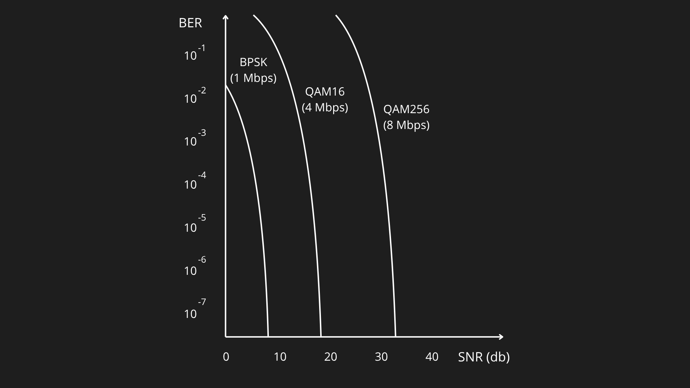
Esiste inoltre un compromesso tra velocità e affidabilità della trasmissione. Un aumento della potenza di trasmissione può migliorare l’SNR e ridurre gli errori, ma comporta un maggiore consumo energetico e un incremento delle interferenze verso altri dispositivi. Allo stesso modo, tecniche di modulazione più veloci richiedono condizioni del canale migliori per mantenere un basso tasso di errore. Per questo motivo le reti Wi-Fi e le reti cellulari moderne utilizzano modulazione e codifica adattative, scegliendo automaticamente la tecnica di trasmissione più adatta alle condizioni del canale.
Problema del terminale nascosto
Un’altra caratteristica delle reti wireless riguarda la condivisione del mezzo trasmissivo. A differenza delle reti cablate, non tutti i dispositivi riescono sempre a rilevare le trasmissioni degli altri. Questo porta al problema del terminale nascosto (hidden terminal), in cui due stazioni non riescono a sentirsi tra loro ma trasmettono contemporaneamente verso lo stesso destinatario, causando collisioni. Un problema analogo può verificarsi a causa del fading, cioè dell’indebolimento del segnale, che impedisce ai dispositivi di rilevare le rispettive trasmissioni pur provocando interferenze sul ricevitore. Queste difficoltà rendono la gestione dell’accesso al mezzo nelle reti wireless più complessa rispetto alle reti cablate.
Utilizzo di CDMA
Nelle reti wireless viene spesso utilizzato il CDMA (Code Division Multiple Access), una tecnica di accesso multiplo appartenente ai protocolli a suddivisione del canale. Poiché il suo funzionamento è già stato descritto in precedenza, è sufficiente ricordare che permette a più utenti di condividere simultaneamente lo stesso canale radio mediante l’assegnazione di codici distinti a ciascun trasmettitore ed è stato ampiamente impiegato nelle reti cellulari.
Wi-Fi: LAN wireless 802.11
Le LAN wireless basate sullo standard IEEE 802.11, comunemente note come Wi-Fi, rappresentano oggi la tecnologia più diffusa per l’accesso locale a Internet. Nonostante nel tempo siano state sviluppate numerose versioni dello standard (802.11b, 802.11g, 802.11n, 802.11ac, ecc.), tutte condividono la stessa architettura di base, lo stesso formato dei frame e lo stesso protocollo di accesso al mezzo, CSMA/CA. Le principali differenze tra gli standard riguardano invece il livello fisico, come le frequenze utilizzate, le tecniche di trasmissione e la velocità massima raggiungibile. Gli standard più recenti, come 802.11n e 802.11ac, introducono inoltre la tecnologia MIMO (Multiple Input Multiple Output), che utilizza più antenne sia in trasmissione sia in ricezione per aumentare il throughput, ridurre le interferenze e migliorare la copertura. Nella versione 802.11ac viene anche introdotto il beamforming, che concentra il segnale verso il dispositivo ricevente anziché irradiarlo uniformemente, migliorando ulteriormente le prestazioni.
Important
Un’importante caratteristica di questa famiglia di standard è la retrocompatibilità: dispositivi che supportano versioni meno recenti possono comunque comunicare con access point più moderni, anche se sfruttando le prestazioni dello standard più lento.
Basic Service Set (BSS)
L’unità fondamentale di una rete Wi-Fi è il Basic Service Set (BSS). Un BSS è costituito da:
- una o più stazioni wireless (host, smartphone, notebook, tablet);
- un Access Point (AP) che coordina tutte le comunicazioni.
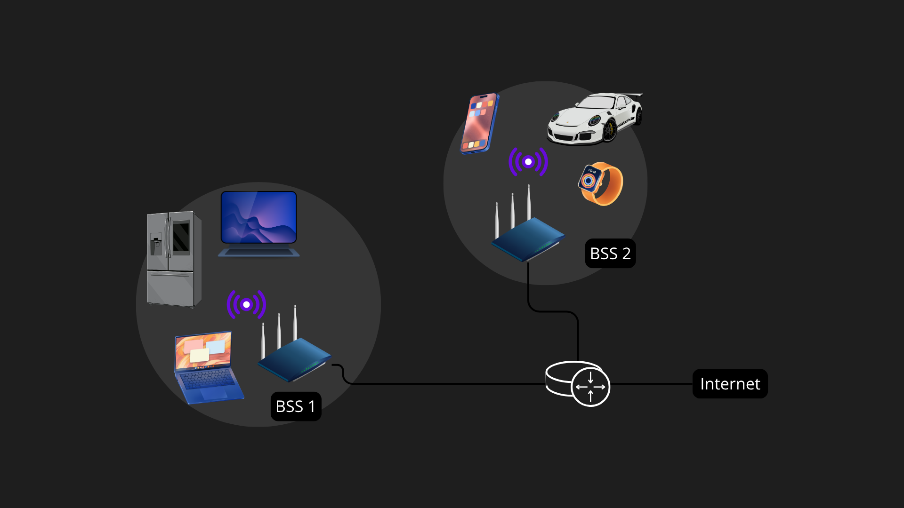
L’Access Point svolge il ruolo di punto di collegamento tra la rete wireless e la rete cablata. Generalmente è connesso tramite Ethernet a uno switch o direttamente a un router che fornisce l’accesso a Internet. In molte reti domestiche router e Access Point sono integrati nello stesso dispositivo. Come avviene nelle reti Ethernet, anche ogni dispositivo Wi-Fi possiede un indirizzo MAC a 48 bit, memorizzato nella scheda di rete e univoco a livello mondiale. Anche ogni Access Point possiede un proprio indirizzo MAC, utilizzato per identificare l’interfaccia wireless. Questa configurazione prende il nome di Wireless LAN con infrastruttura, poiché tutta la comunicazione passa attraverso l’Access Point.
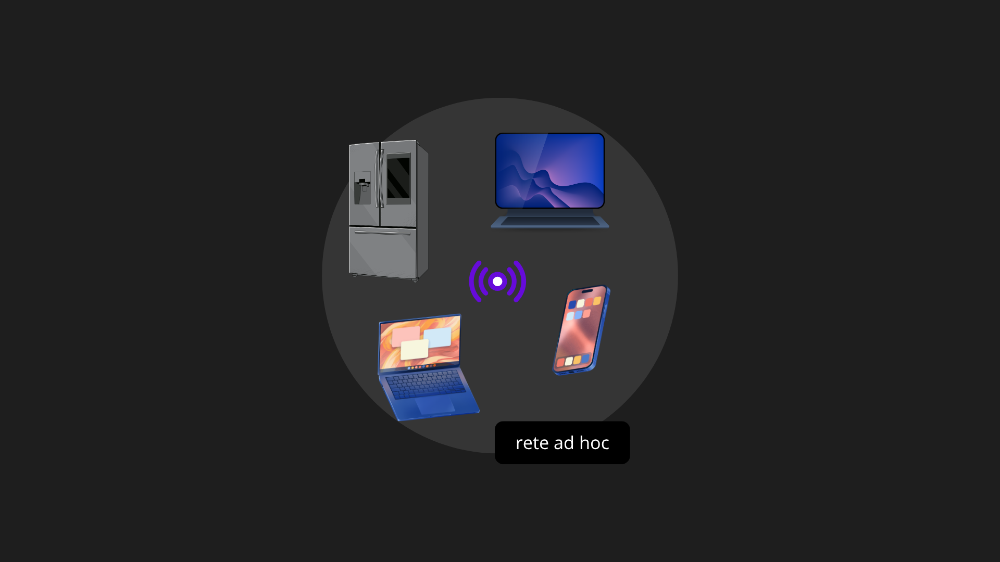
Esiste anche una seconda modalità, detta rete ad hoc, nella quale i dispositivi comunicano direttamente tra loro senza alcun Access Point né infrastruttura preesistente. Le reti ad hoc vengono create temporaneamente quando più dispositivi devono scambiarsi dati in assenza di una rete esistente. Tuttavia sono molto meno diffuse rispetto alle reti con infrastruttura, che rappresentano il modello standard utilizzato nella quasi totalità delle reti Wi-Fi.
Canali radio e identificazione della rete
Prima che una stazione possa trasmettere dati deve individuare una rete Wi-Fi disponibile. Ogni Access Point viene configurato dall’amministratore con due informazioni fondamentali:
- un SSID (Service Set Identifier), cioè il nome della rete visibile agli utenti;
- un canale radio, cioè la porzione dello spettro radio utilizzata per trasmettere.
Nella banda a 2,4 GHz lo standard 802.11 definisce 11 canali, ma essi sono parzialmente sovrapposti. Per evitare interferenze si utilizzano normalmente soltanto i canali 1, 6 e 11, che sono gli unici completamente indipendenti. Questa caratteristica permette, ad esempio, di installare più Access Point nello stesso edificio assegnando loro canali differenti, così da aumentare la capacità complessiva della rete senza creare interferenze reciproche.
La Wi-Fi Jungle
Può accadere che una stazione riceva contemporaneamente il segnale di numerosi Access Point appartenenti a reti differenti. Questa situazione viene definita Wi-Fi Jungle. È il caso tipico di: condomini, aeroporti, università, bar, centri commerciali. In questi ambienti il dispositivo vede contemporaneamente numerosi SSID appartenenti a sottoreti diverse. Prima di poter comunicare è quindi necessario scegliere un solo Access Point al quale collegarsi. Una stazione può infatti essere associata a un unico AP per volta, attraverso il quale passerà tutto il traffico destinato a Internet.
Associazione all’Access Point
L’associazione rappresenta il processo mediante il quale una stazione crea un collegamento logico con un Access Point. Dal punto di vista operativo equivale alla creazione di un “cavo virtuale” tra dispositivo e AP:
- l’Access Point scelto sarà l’unico autorizzato a trasmettere dati verso il dispositivo,
- il dispositivo potrà inviare traffico verso Internet esclusivamente attraverso quell’AP.
L’intera procedura può essere suddivisa in varie fasi:
Individuazione degli Access Point
Il primo obiettivo della stazione è scoprire quali Access Point siano raggiungibili. Lo standard 802.11 mette a disposizione due tecniche.
- Scansione passiva: ogni Access Point trasmette periodicamente dei frame Beacon, contenenti: SSID della rete, indirizzo MAC dell’Access Point, altre informazioni di gestione. La stazione esegue una scansione dei canali radio ascoltando questi Beacon e costruisce l’elenco delle reti disponibili.
- Scansione attiva: in questo caso a stazione invia un Probe Request in broadcast, tutti gli Access Point che ricevono la richiesta rispondono con un Probe Response e il dispositivo costruisce l’elenco degli AP disponibili utilizzando le risposte ricevute. La scansione attiva consente quindi di individuare rapidamente le reti senza attendere l’arrivo periodico dei Beacon.
Selezione dell’Access Point
Una volta individuati gli Access Point disponibili, il dispositivo deve sceglierne uno. Lo standard IEEE non impone alcun algoritmo di scelta: la decisione viene lasciata al produttore del dispositivo. Nella maggior parte dei casi viene scelto l’AP con il segnale ricevuto più potente, poiché un SNR maggiore consente velocità più elevate e minore probabilità di errore. Tuttavia questa scelta non è sempre ottimale. Un Access Point con segnale molto forte potrebbe infatti essere già utilizzato da molti client e quindi offrire prestazioni inferiori rispetto a un AP leggermente più distante ma meno congestionato.
Procedura di associazione
Dopo aver scelto l’Access Point, viene eseguita la procedura di associazione vera e propria. La stazione:
- invia un Association Request all’Access Point,
- l’Access Point risponde con un Association Response,
- il collegamento logico viene stabilito.
Da questo momento il dispositivo è ufficialmente associato all’AP.
Ottenimento dell’indirizzo IP
L’associazione avviene esclusivamente a livello di collegamento. Per poter comunicare sulla rete IP il dispositivo deve ancora ottenere un indirizzo IP. A questo scopo viene eseguito il protocollo DHCP, attraverso l’Access Point. Il server DHCP assegna: indirizzo IP, subnet mask, gateway predefinito, indirizzo del server DNS. Terminata questa fase il dispositivo diventa un normale host della sottorete e può iniziare la comunicazione con Internet.
Autenticazione
Molte reti Wi-Fi richiedono anche una procedura di autenticazione prima di consentire l’accesso. Le modalità più comuni previste dal testo sono:
- autenticazione basata sull’indirizzo MAC del dispositivo,
- autenticazione mediante nome utente e password.
L’Access Point generalmente non verifica direttamente le credenziali, ma comunica con un server di autenticazione dedicato utilizzando protocolli come RADIUS o DIAMETER. Questa separazione permette di centralizzare il controllo degli accessi, consentendo a un unico server di autenticare gli utenti di molti Access Point contemporaneamente e semplificando la gestione della rete.
Reti cellulari
Le reti cellulari rappresentano la soluzione utilizzata quando non è disponibile una rete Wi-Fi. A differenza degli hotspot Wi-Fi, che coprono aree limitate (generalmente comprese tra 10 e 100 metri), le reti cellulari sono progettate per garantire una copertura geografica molto più ampia, consentendo agli utenti di mantenere la connessione a Internet anche durante gli spostamenti.
Evoluzione delle reti cellulari
L’evoluzione delle reti mobili può essere suddivisa in diverse generazioni, ciascuna delle quali introduce importanti miglioramenti sia nell’architettura sia nei servizi offerti.
- 1G: reti analogiche dedicate esclusivamente al traffico voce.
- 2G (GSM): introduzione della trasmissione digitale della voce.
- 2.5G: estensione del GSM con il supporto ai servizi dati (GPRS).
- 3G (UMTS): progettato per supportare contemporaneamente voce e dati, con velocità molto superiori rispetto al 2G.
- 4G (LTE): architettura completamente basata su IP che integra voce e dati nella stessa infrastruttura di rete.
L’evoluzione mostra un progressivo passaggio da una rete telefonica tradizionale a una vera rete di trasmissione dati.
Architettura della rete cellulare 2G (GSM)
Una rete cellulare prende il nome dalla suddivisione dell’area geografica in numerose celle, ciascuna delle quali è servita da una stazione radio dedicata. Ogni cella contiene una Base Transceiver Station (BTS), cioè la stazione base che comunica via radio con tutti i dispositivi mobili presenti nella propria area di copertura. La dimensione della cella dipende principalmente dalla potenza di trasmissione della BTS e dei terminali mobili, dalla presenza di ostacoli fisici e dall’altezza delle antenne. Nelle reti moderne una singola BTS può utilizzare antenne direzionali per coprire contemporaneamente tre celle adiacenti, riducendo il numero di stazioni necessarie. Le BTS non operano in modo autonomo, ma sono raggruppate e coordinate da un Base Station Controller (BSC). Ogni BSC controlla decine di stazioni base e si occupa della gestione delle risorse radio. In particolare assegna ai dispositivi i canali radio disponibili, esegue il paging per individuare la cella in cui si trova un utente quando deve ricevere una chiamata e gestisce l’handoff, cioè il trasferimento della connessione da una BTS all’altra quando l’utente si sposta tra celle adiacenti. L’insieme formato dalle BTS e dal relativo BSC costituisce il Base Station System (BSS).
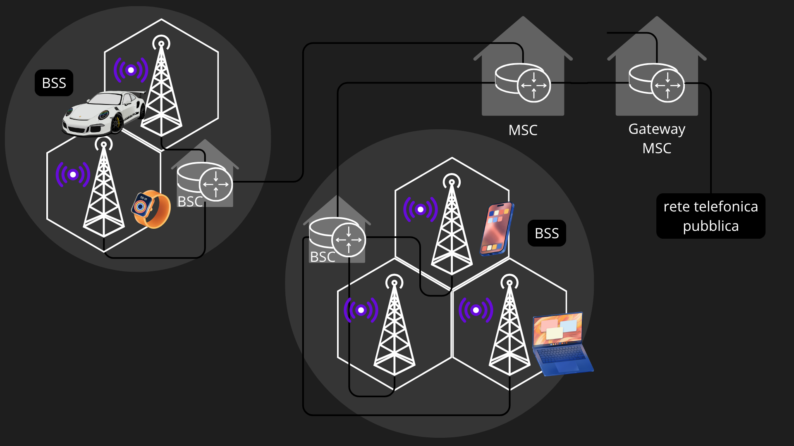
Al livello superiore si trova il Mobile Switching Center (MSC), che rappresenta il nodo centrale della rete GSM e coordina il funzionamento di più Base Station System. L’MSC gestisce le principali funzioni di controllo della rete, tra cui l’autenticazione degli utenti, l’autorizzazione all’accesso, l’instaurazione e la terminazione delle chiamate, oltre al coordinamento dell’handoff quando il passaggio coinvolge celle appartenenti a BSC differenti. Alcuni MSC svolgono anche il ruolo di Gateway MSC (GMSC), fungendo da punto di collegamento tra la rete GSM e la rete telefonica pubblica (PSTN) o altre reti esterne. L’architettura GSM è organizzata secondo una struttura gerarchica: i dispositivi mobili comunicano via radio con la BTS della cella in cui si trovano. Più BTS sono controllate da un BSC, che gestisce le risorse radio e la mobilità locale. Infine, più BSC sono coordinati da un MSC, responsabile della gestione globale delle comunicazioni e dell’interconnessione con le altre reti. Questa organizzazione consente alla rete di gestire in modo efficiente sia le comunicazioni sia gli spostamenti continui degli utenti tra celle diverse.
Accesso radio: combinazione FDM e TDM
Nel sistema GSM il collegamento radio utilizza contemporaneamente FDM (Frequency Division Multiplexing) e TDM (Time Division Multiplexing). Ogni banda di frequenza viene quindi ulteriormente suddivisa in slot temporali, permettendo di supportare numerose comunicazioni contemporanee. In GSM ogni canale radio occupa 200 kHz e ogni canale viene suddiviso in 8 slot temporali, consentendo fino a 8 comunicazioni simultanee.
Architettura della rete cellulare 3G (UMTS)
L’architettura delle reti 3G (UMTS) mantiene la stessa organizzazione gerarchica introdotta con il GSM, ma sostituisce la tecnologia radio per offrire velocità di trasmissione molto più elevate e supportare servizi dati come navigazione Internet, videoconferenze e streaming. Anche in questo caso il territorio è suddiviso in celle, ognuna servita da una stazione radio dedicata. La differenza principale è che la Base Transceiver Station (BTS) viene sostituita dal Node B, una stazione base più evoluta che utilizza la tecnologia WCDMA (Wideband Code Division Multiple Access) per consentire a più utenti di condividere in contemporanea lo stesso canale radio mediante codici differenti. Più Node B vengono coordinati da un Radio Network Controller (RNC), che svolge un ruolo analogo a quello del BSC nelle reti GSM, ma con responsabilità più estese. L’RNC assegna le risorse radio agli utenti, controlla la qualità delle connessioni, gestisce il paging e coordina l’handoff tra celle appartenenti al proprio dominio. L’insieme formato da Node B e RNC costituisce il Radio Network System (RNS), che rappresenta la rete di accesso radio dell’UMTS.
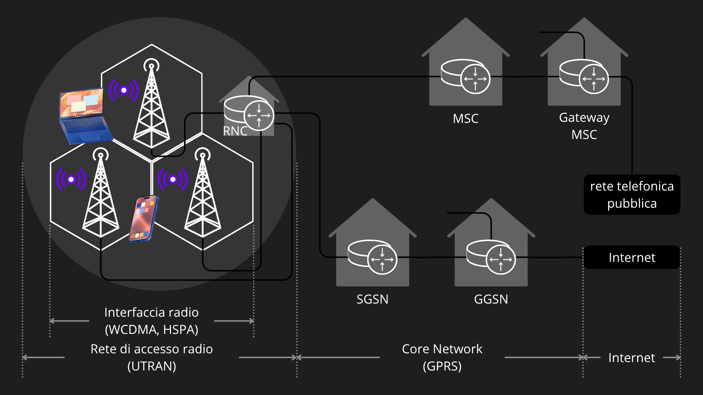
Al livello superiore si trova ancora il Mobile Switching Center (MSC), che continua a rappresentare il nodo centrale per la gestione dei servizi tradizionali a commutazione di circuito, come le chiamate vocali. Accanto ad esso viene introdotta una seconda infrastruttura dedicata ai servizi dati, costituita principalmente dallo Serving GPRS Support Node (SGSN) e dal Gateway GPRS Support Node (GGSN). L’SGSN tiene traccia della posizione dei dispositivi mobili, gestisce la mobilità e instrada i pacchetti dati all’interno della rete cellulare, mentre il GGSN rappresenta il punto di collegamento tra la rete UMTS e Internet. Nel complesso, l’architettura UMTS mantiene quindi la struttura gerarchica del GSM ma introduce una netta separazione tra traffico voce e traffico dati. I dispositivi mobili comunicano via radio con il Node B, più Node B sono controllati da un RNC, mentre i servizi vengono gestiti dal core network, composto dall’MSC per le chiamate vocali e da SGSN e GGSN per la trasmissione dei dati. Questa evoluzione permette di offrire servizi multimediali e connessioni Internet molto più veloci rispetto alle reti di seconda generazione.
Accesso radio: il confine wireless
La rete di accesso radio (Radio Access Network) rappresenta il primo tratto della comunicazione tra il dispositivo mobile e il core network. Essa è costituita dal Radio Network System (RNS), formato dai Node B e dal relativo Radio Network Controller (RNC). L’RNC costituisce il punto di collegamento tra la rete radio e il core network, instradando il traffico voce verso l’MSC e quello dati verso l’SGSN. In questo modo, pur utilizzando due reti centrali differenti per voce e dati, entrambe condividono la stessa infrastruttura di accesso radio. La principale innovazione dell’UMTS rispetto al GSM riguarda la tecnica di accesso al mezzo. Mentre il 2G utilizza una combinazione di FDM e TDM, il 3G introduce il Direct Sequence Wideband CDMA (DS-WCDMA), una versione a banda larga del CDMA che permette a più utenti di trasmettere contemporaneamente sulla stessa banda di frequenza utilizzando codici differenti. Questa tecnica migliora l’utilizzo dello spettro radio, aumenta la capacità della rete e costituisce la base del servizio HSPA (High Speed Packet Access), che porta la velocità di download fino a circa 14 Mbps.
Architettura della rete cellulare 4G (LTE)
Con l’introduzione del 4G (LTE) l’architettura della rete cellulare viene profondamente semplificata rispetto alle generazioni precedenti. L’obiettivo principale è ridurre il numero di elementi della rete, diminuire la latenza e ottimizzare il trasporto del traffico dati. A differenza del GSM e dell’UMTS, LTE è progettato come una rete interamente basata su IP (All-IP), nella quale anche la voce viene trasportata come traffico dati attraverso tecnologie come VoLTE (Voice over LTE). La rete continua a essere suddivisa in celle, ma ogni cella è ora servita da una stazione base chiamata eNodeB (Evolved Node B). L’eNodeB rappresenta l’evoluzione della BTS del GSM e del Node B dell’UMTS, assumendo anche molte delle funzioni che nelle reti precedenti erano svolte dal BSC e dall’RNC. Comunica direttamente con i dispositivi mobili (UE - User Equipment), assegna le risorse radio, gestisce il paging, coordina l’handover tra celle adiacenti e si occupa delle principali operazioni di controllo della mobilità. Nel piano dei dati, l’eNodeB riceve i datagrammi provenienti dagli UE e li incapsula all’interno di un tunnel IP diretto verso il Packet Data Network Gateway (P-GW) attraverso l’Evolved Packet Core (EPC). Questo meccanismo di tunneling consente di trasportare il traffico dell’utente all’interno della rete LTE mantenendo separati i flussi dei diversi dispositivi e permettendo di applicare specifiche garanzie di Qualità del Servizio (QoS), ad esempio assegnando priorità maggiore al traffico voce rispetto al traffico dati. Nel piano di controllo, invece, l’eNodeB gestisce la segnalazione necessaria per la registrazione degli utenti e per la mobilità.
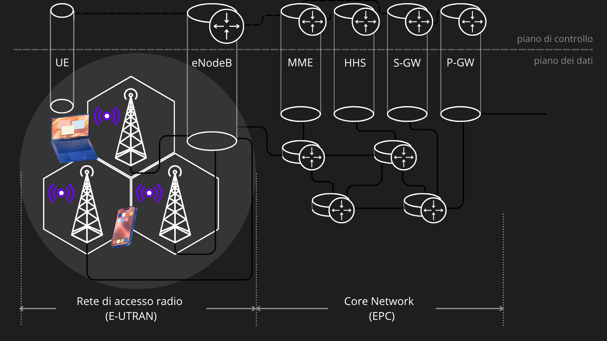
Gli eNodeB sono collegati direttamente al core network LTE, chiamato Evolved Packet Core (EPC), costituito da pochi elementi specializzati. Il Mobility Management Entity (MME) rappresenta il nodo di controllo della rete. Si occupa dell’autenticazione degli utenti, della gestione della mobilità, dell’instaurazione delle connessioni e riceve dal Home Subscriber Server (HSS) tutte le informazioni relative al profilo dell’utente, come i dati di autenticazione, le autorizzazioni al roaming e il profilo di qualità del servizio. Il Serving Gateway (S-GW) costituisce il punto di appoggio della mobilità nel piano dei dati. Tutto il traffico proveniente dagli utenti mobili attraversa questo nodo, che mantiene la continuità delle comunicazioni durante gli spostamenti tra celle diverse e svolge anche funzioni di contabilizzazione del traffico. Il Packet Data Network Gateway (P-GW) rappresenta invece il punto di uscita della rete LTE verso Internet e le altre reti IP. Oltre ad assegnare l’indirizzo IP ai dispositivi mobili, gestisce la Qualità del Servizio (QoS) e svolge le operazioni di incapsulamento e decapsulamento dei datagrammi durante il trasporto attraverso i tunnel dell’EPC. Nel complesso, l’architettura LTE elimina completamente i controller intermedi presenti nelle reti 2G e 3G, affidando molte funzioni direttamente all’eNodeB. I dispositivi mobili comunicano con l’eNodeB della propria cella; gli eNodeB sono connessi direttamente all’Evolved Packet Core, mentre il core network gestisce autenticazione, mobilità, qualità del servizio e instradamento del traffico verso Internet. Questa semplificazione riduce sensibilmente la latenza, aumenta la velocità di trasmissione e rende LTE una rete progettata principalmente per i servizi dati ad alta velocità.
Accesso radio: LTE
A livello di accesso radio, LTE utilizza una tecnica di multiplexing chiamata OFDM (Orthogonal Frequency Division Multiplexing), che combina la suddivisione in frequenza e quella nel tempo. Lo spettro radio viene suddiviso in numerosi canali molto ravvicinati ma ortogonali, cioè progettati per interferire il meno possibile tra loro. Le risorse radio vengono assegnate dinamicamente ai dispositivi mobili sotto forma di time slot distribuiti su una o più frequenze. Ogni slot ha una durata di 0,5 ms e può essere riallocato anche ogni millisecondo in base alle condizioni della rete. Un dispositivo che riceve più slot, eventualmente anche su frequenze differenti, può raggiungere velocità di trasmissione più elevate. L’eNodeB utilizza inoltre algoritmi di scheduling opportunistico per decidere a quale utente assegnare le risorse radio. Questa decisione tiene conto della qualità del canale radio, delle condizioni di propagazione e delle priorità di servizio previste dal contratto dell’utente. Anche la modulazione viene adattata dinamicamente in funzione della qualità del segnale, mentre l’impiego di tecnologie MIMO permette di aumentare ulteriormente il throughput e migliorare l’efficienza dello spettro.
Gestione della mobilità
La mobilità rappresenta una delle caratteristiche fondamentali delle reti wireless moderne e consiste nella capacità di un dispositivo di spostarsi tra punti di accesso differenti mantenendo la possibilità di comunicare con la rete. A differenza delle reti cablate, dove un host rimane collegato allo stesso punto di accesso, un dispositivo mobile può cambiare continuamente la propria posizione, passando da una rete o da una cella a un’altra. Questo introduce una nuova sfida: la rete deve essere in grado di individuare la posizione corrente del dispositivo e continuare a recapitarvi i dati senza interrompere le comunicazioni. Dal punto di vista del livello di rete, la mobilità non riguarda semplicemente lo spostamento fisico dell’utente, ma la capacità di mantenere la raggiungibilità del nodo e, quando necessario, le connessioni attive durante il cambio del punto di accesso alla rete. Per raggiungere questo obiettivo è necessario risolvere due problemi fondamentali: mantenere un’identità stabile del nodo mobile, in modo che possa essere sempre identificato indipendentemente dalla rete in cui si trova, e instradare correttamente i datagrammi verso la sua posizione corrente, anche quando il dispositivo cambia rete. La gestione della mobilità può essere realizzata con approcci differenti. Nei paragrafi successivi verranno analizzati dapprima i principi generali della mobilità nelle reti IP e successivamente la loro applicazione nelle reti cellulari, prendendo come caso di studio il GSM.
Gestione tramite IP Mobile
Uno dei principali problemi della mobilità nelle reti IP riguarda la gestione dell’indirizzo IP. Normalmente, quando un dispositivo cambia rete, riceve un nuovo indirizzo IP tramite protocolli come DHCP. Questa soluzione è adeguata per applicazioni client, come la navigazione Web o la posta elettronica, poiché è possibile interrompere la connessione e stabilirne una nuova. La situazione cambia quando si desidera mantenere attive le connessioni durante lo spostamento: se l’indirizzo IP cambiasse a ogni cambio di rete, tutte le connessioni TCP verrebbero interrotte, poiché l’indirizzo IP costituisce uno degli identificatori fondamentali della comunicazione. Per risolvere questo problema è stato definito Mobile IP, lo standard che consente a un nodo mobile di mantenere il proprio indirizzo IP permanente anche quando si sposta tra reti diverse, rendendo la mobilità trasparente alle applicazioni. Analizzeremo lo standard definito per IPv4 nell’RFC 5944.
Architettura generale dell’IP Mobile
Per consentire al nodo mobile di mantenere il proprio indirizzo pur spostandosi tra reti differenti, viene introdotta un’architettura composta da alcune entità dedicate alla gestione della mobilità. L’idea fondamentale consiste nel separare l’identità del dispositivo dalla sua posizione fisica, mantenendo costante il suo indirizzo permanente e aggiornando solamente le informazioni relative alla rete nella quale esso si trova in quel momento.
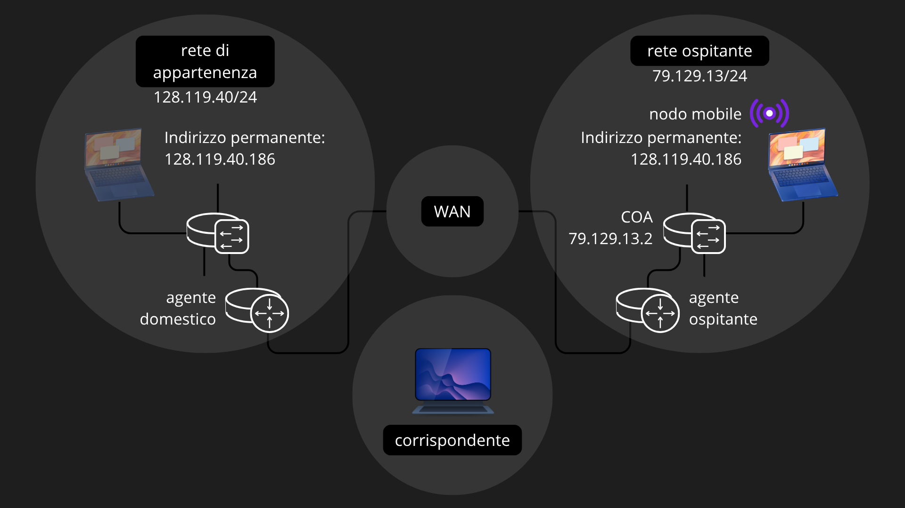
Home Network e Home Agent
Ogni dispositivo mobile appartiene a una Home Network, cioè la rete nella quale risiede permanentemente e alla quale è associato il suo indirizzo IP stabile, chiamato Home Address. All’interno della Home Network opera l’Home Agent (HA), l’entità incaricata di gestire la mobilità del dispositivo. L’Home Agent mantiene continuamente aggiornata la posizione del nodo mobile e rappresenta il punto di riferimento permanente attraverso il quale è sempre possibile raggiungere il dispositivo. Quando un datagramma destinato al nodo mobile arriva nella Home Network, è proprio l’Home Agent a stabilire dove il dispositivo si trovi realmente e a inoltrare il traffico verso la rete corretta.
Foreign Network e Foreign Agent
Quando il nodo mobile si sposta all’esterno della propria rete di appartenenza, entra temporaneamente in una Foreign Network (o Visited Network). In questa rete può essere presente un Foreign Agent (FA), il cui compito è assistere il nodo mobile durante la permanenza nella rete ospitante. Il Foreign Agent assegna al dispositivo un indirizzo temporaneo e comunica tale informazione all’Home Agent, permettendo così alla rete di conoscere la nuova posizione del nodo. Nelle implementazioni più moderne questa funzione può essere svolta direttamente dal dispositivo mobile, che ottiene autonomamente il proprio indirizzo temporaneo e lo comunica all’Home Agent senza la necessità di un Foreign Agent dedicato. Quando il nodo entra nella rete ospitante riceve un Care-of Address (COA), cioè un indirizzo IP temporaneo appartenente alla rete visitata. Di conseguenza il dispositivo possiede contemporaneamente due indirizzi: l’Home Address, che rappresenta l’identità permanente del nodo, e il Care-of Address, che identifica invece la sua posizione corrente. L’Home Address non cambia mai, mentre il Care-of Address viene aggiornato ogni volta che il dispositivo si sposta in una nuova rete.
Funzionamento dello standard IP Mobile
L’architettura descritta finora definisce gli elementi fondamentali necessari per supportare la mobilità, ma affinché il sistema possa funzionare è necessario stabilire anche come questi elementi interagiscono tra loro. Lo standard Mobile IP, definito per IPv4 nell’RFC 5944, specifica quindi una serie di protocolli che consentono al nodo mobile di essere individuato, registrare la propria posizione e ricevere correttamente i datagrammi durante gli spostamenti. Il funzionamento dello standard può essere suddiviso in tre fasi principali:
Ricerca dell’agente (Agent Discovery)
Quando un nodo mobile entra in una nuova rete, deve innanzitutto individuare l’agente presente in quella rete, così da poter stabilire se si trova nella propria Home Network oppure in una Foreign Network e ottenere le informazioni necessarie alla registrazione. Questa fase prende il nome di Agent Discovery e può essere realizzata secondo due modalità: Agent Advertisement e Agent Solicitation.
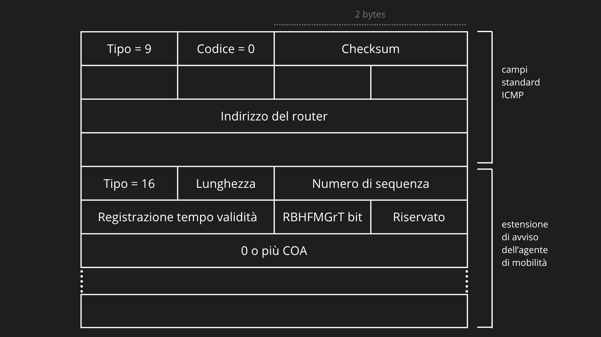
Nell’Agent Advertisement è l’agente stesso a rendere periodicamente nota la propria presenza. A intervalli regolari invia in broadcast un messaggio ICMP Router Advertisement, esteso con informazioni specifiche di IP Mobile. Oltre all’indirizzo IP dell’agente, il messaggio contiene una serie di campi che permettono al nodo mobile di capire quali servizi siano disponibili nella rete. Tra le informazioni più importanti figurano: il bit H (Home Agent), che indica se l’agente è un Home Agent, il bit F (Foreign Agent), che indica la presenza di un Foreign Agent, il bit R (Registration Required), che specifica se il nodo mobile deve registrarsi presso il Foreign Agent prima di poter utilizzare la rete, i bit M e G, indicano eventuali modalità di incapsulamento differenti dal classico IP-in-IP, uno o più Care-of Address (COA) messi a disposizione dal Foreign Agent, tra i quali il nodo mobile sceglierà quello da registrare presso il proprio Home Agent. Grazie a queste informazioni il nodo mobile è in grado di riconoscere la rete in cui si trova e prepararsi alla registrazione.
Important
Il nodo mobile potrebbe non voler attendere il successivo messaggio periodico di Advertisement. In questo caso utilizza la procedura di Agent Solicitation, inviando in broadcast un messaggio ICMP Agent Solicitation. L’agente che riceve la richiesta risponde immediatamente con un Agent Advertisement inviato in unicast direttamente al nodo mobile, accelerando così il processo di scoperta della rete.
Registrazione presso l’Home Agent
Dopo aver ottenuto il Care-of Address (COA) durante la fase di Agent Discovery, il nodo mobile deve comunicare la propria nuova posizione all’Home Agent, affinché quest’ultimo possa sapere dove inoltrare i datagrammi destinati al suo indirizzo IP permanente. La registrazione può essere effettuata direttamente dal nodo mobile oppure, come nel caso più comune previsto dallo standard, tramite il Foreign Agent.
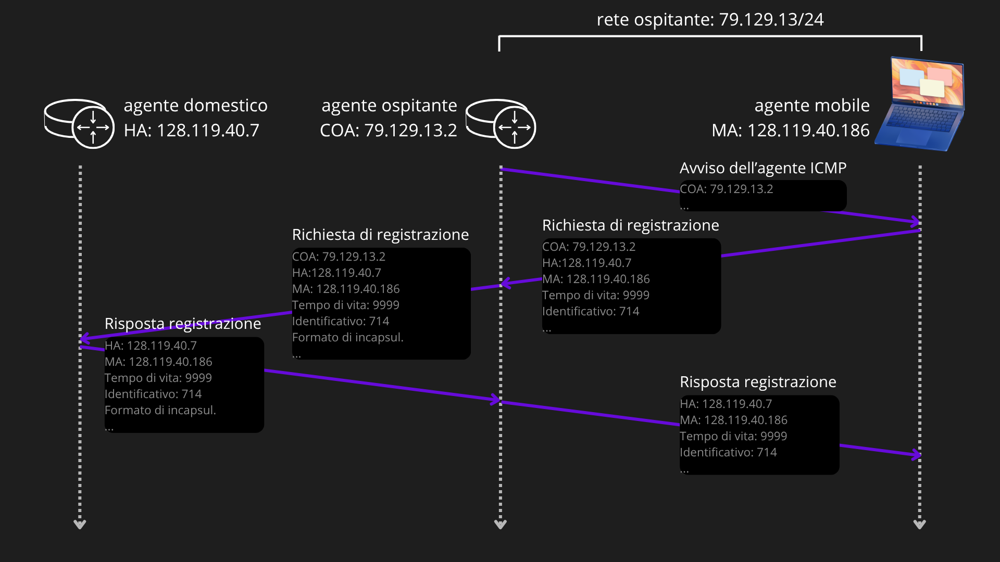
Inizialmente il nodo mobile invia al Foreign Agent un messaggio di registrazione IP Mobile, trasportato tramite UDP sulla porta 434, contenente il Care-of Address, l’indirizzo dell’Home Agent (HA), l’indirizzo IP permanente del nodo (Mobile Address - MA), il tempo di validità richiesto per la registrazione e un identificatore di registrazione a 64 bit, utilizzato per associare la risposta alla richiesta corrispondente e prevenire l’elaborazione di messaggi duplicati. Ricevuta la richiesta, il Foreign Agent memorizza l’indirizzo permanente del nodo mobile, registra il fatto che dovrà ricevere i datagrammi incapsulati destinati a quel nodo e inoltra la richiesta all’Home Agent, includendo anche il tipo di incapsulamento richiesto. L’Home Agent verifica quindi l’autenticità e la correttezza della richiesta e, se questa risulta valida, associa l’indirizzo IP permanente del nodo al relativo Care-of Address. Da questo momento tutti i datagrammi destinati al nodo mobile potranno essere intercettati dall’Home Agent, incapsulati e inoltrati tramite tunneling verso il COA. Successivamente l’Home Agent invia una Registration Reply, contenente il proprio indirizzo, l’indirizzo permanente del nodo, il tempo di validità effettivamente concesso (che può essere inferiore a quello richiesto) e l’identificatore della registrazione. Il Foreign Agent riceve la risposta e la inoltra infine al nodo mobile, completando così la procedura di registrazione. La registrazione ha sempre una validità temporanea e deve quindi essere periodicamente rinnovata; in caso contrario viene automaticamente eliminata. Analogamente, quando il nodo mobile si sposta in una nuova rete, non è necessario cancellare manualmente il vecchio Care-of Address: la registrazione del nuovo COA presso l’Home Agent sostituisce automaticamente quella precedente. Una volta completata la registrazione, il nodo mobile può essere raggiunto attraverso il meccanismo di instradamento indiretto, adottato dallo standard Mobile IP, che consente all’Home Agent di inoltrare correttamente i datagrammi verso la rete ospitante.
Instradamento dei datagrammi verso un nodo mobile
Una volta che il nodo mobile ha registrato il proprio Care-of Address, la rete deve essere in grado di recapitarvi correttamente i datagrammi destinati al suo Home Address. Lo standard Mobile IP prevede come meccanismo di funzionamento l’instradamento indiretto, nel quale tutti i pacchetti transitano attraverso l’Home Agent. In questo approccio il nodo che desidera comunicare con il dispositivo mobile, detto corrispondente, continua a utilizzare esclusivamente l’Home Address del destinatario. Dal suo punto di vista il nodo mobile non sembra essersi mai spostato, poiché la mobilità è completamente trasparente. I datagrammi vengono instradati normalmente fino alla Home Network, dove vengono intercettati dall’Home Agent. Quest’ultimo consulta il Care-of Address registrato per il nodo mobile e provvede a reinstradare il traffico verso la rete ospitante, nella quale il pacchetto viene infine consegnato al dispositivo.
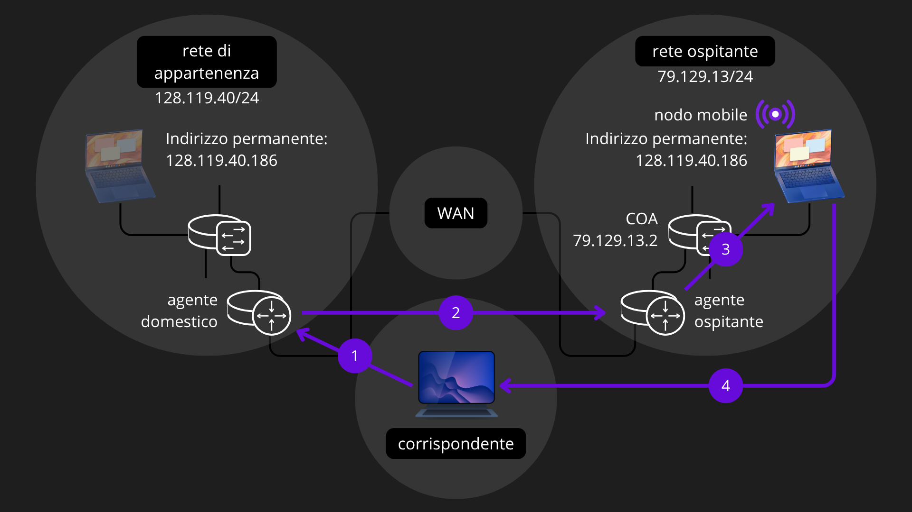
Per trasferire il datagramma verso la rete visitata, l’Home Agent utilizza il meccanismo del tunneling. Il datagramma originale non viene modificato, ma viene incapsulato all’interno di un nuovo datagramma avente come destinazione il Care-of Address del nodo mobile. Una volta raggiunta la rete ospitante, il pacchetto esterno viene rimosso tramite decapsulamento recuperando il datagramma originale che viene infine consegnato al nodo mobile. Il principale vantaggio dell’instradamento indiretto è la sua semplicità: il corrispondente non deve conoscere la posizione del nodo mobile e continua a utilizzare sempre il suo indirizzo permanente. Lo svantaggio principale è il Triangle Routing Problem. Poiché tutti i datagrammi transitano obbligatoriamente attraverso l’Home Agent, il percorso seguito dai pacchetti non coincide quasi mai con quello ottimale, aumentando latenza e traffico di rete.
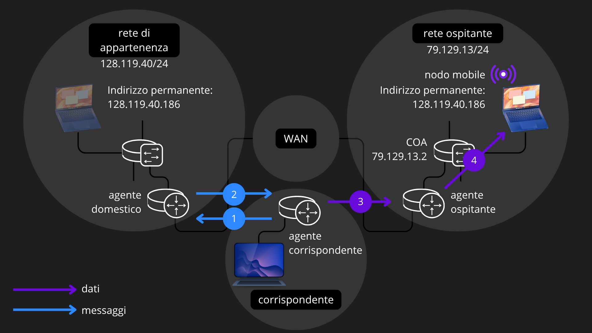
Per ridurre il problema del Triangle Routing, è stata proposta una tecnica di ottimizzazione, nota come instradamento diretto o Route Optimization. Questa modalità non fa parte del funzionamento base di Mobile IP, ma rappresenta un’estensione che può essere adottata per migliorare l’efficienza della comunicazione. In questo approccio il corrispondente, anziché inviare tutti i datagrammi all’Home Agent, richiede a quest’ultimo il Care-of Address (COA) del nodo mobile. Una volta ottenuto il COA, il corrispondente incapsula direttamente i datagrammi e li invia alla rete visitata mediante tunneling, evitando il passaggio intermedio attraverso la Home Network e riducendo il percorso seguito dai pacchetti. Questo approccio elimina il percorso triangolare, ma introduce una nuova difficoltà. Ogni volta che il nodo mobile cambia rete, cambia anche il suo Care-of Address. Di conseguenza, il corrispondente dovrebbe essere informato di ogni variazione del COA. In caso contrario continuerebbe a inviare i datagrammi verso la rete precedentemente visitata. Diventa quindi necessario introdurre meccanismi aggiuntivi di aggiornamento della posizione del nodo mobile.
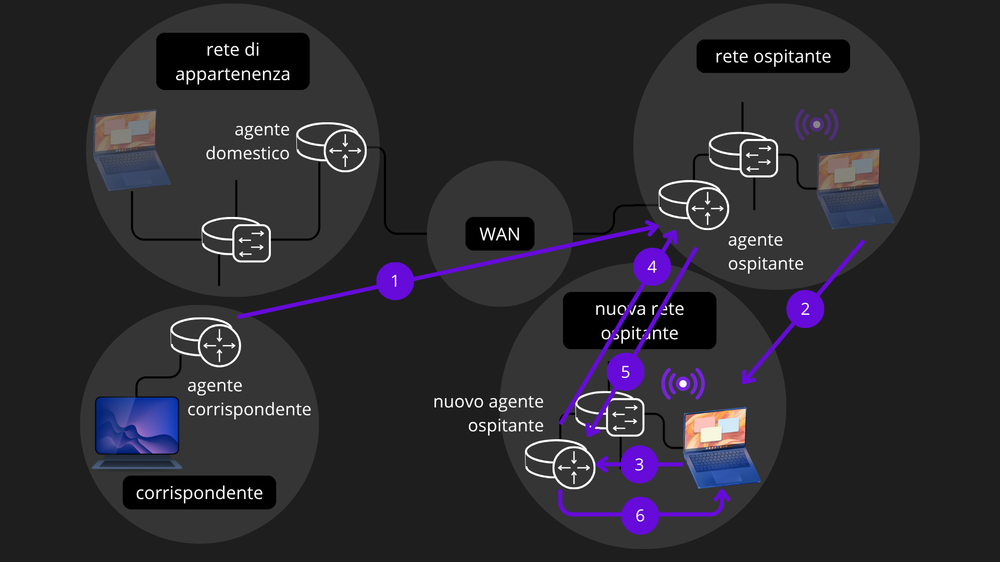
Una possibile soluzione consiste nell’introdurre un Anchor Foreign Agent (AFA), che funge da punto di riferimento stabile per tutta la durata della comunicazione. L’Anchor Foreign Agent coincide con il Foreign Agent della prima rete visitata nella quale il nodo mobile si trovava all’inizio della sessione. Quando il nodo si sposta in una nuova rete, ottiene un nuovo Care-of Address e si registra presso il nuovo Foreign Agent, che comunica la nuova posizione all’Anchor Foreign Agent. Il corrispondente continua quindi a inviare i datagrammi sempre allo stesso Anchor Foreign Agent, il quale provvede a reinstradarli verso il Foreign Agent corrente e, infine, al nodo mobile. Questa soluzione evita di aggiornare continuamente il corrispondente a ogni spostamento del nodo, trasferendo il compito di seguire la mobilità all’Anchor Foreign Agent. Il principio è inoltre analogo a quello adottato nelle reti cellulari, dove il ruolo di punto di riferimento stabile è svolto dall’Anchor MSC durante gli handoff tra MSC differenti.
Gestione tramite reti cellulari
Dopo aver analizzato la gestione della mobilità nelle reti IP attraverso Mobile IP, è possibile osservare come gli stessi obiettivi vengano raggiunti nelle reti cellulari, sebbene con un’architettura completamente diversa. Nelle reti cellulari il problema non consiste nel mantenere invariato un indirizzo IP, bensì nel permettere all’utente di continuare a essere raggiungibile mediante il proprio numero telefonico indipendentemente dalla cella o dalla rete in cui si trova. Anche in questo caso è necessario conoscere continuamente la posizione del dispositivo, aggiornare tale informazione quando l’utente si sposta e instradare correttamente le chiamate verso la rete in cui il terminale è effettivamente presente. Per descrivere questi meccanismi utilizziamo come caso di studio il GSM (Global System for Mobile Communications). Sebbene le reti 3G, 4G e 5G abbiano introdotto architetture differenti, i principi fondamentali della gestione della mobilità rimangono sostanzialmente invariati.
Architettura generale del GSM
Per gestire la mobilità il GSM introduce alcuni elementi di rete dedicati alla localizzazione dell’utente e all’instradamento delle chiamate. L’idea è molto simile a quella vista in Mobile IP: separare l’identità permanente dell’utente dalla sua posizione corrente, mantenendo costante il numero telefonico e aggiornando solamente le informazioni sulla rete nella quale il dispositivo si trova.
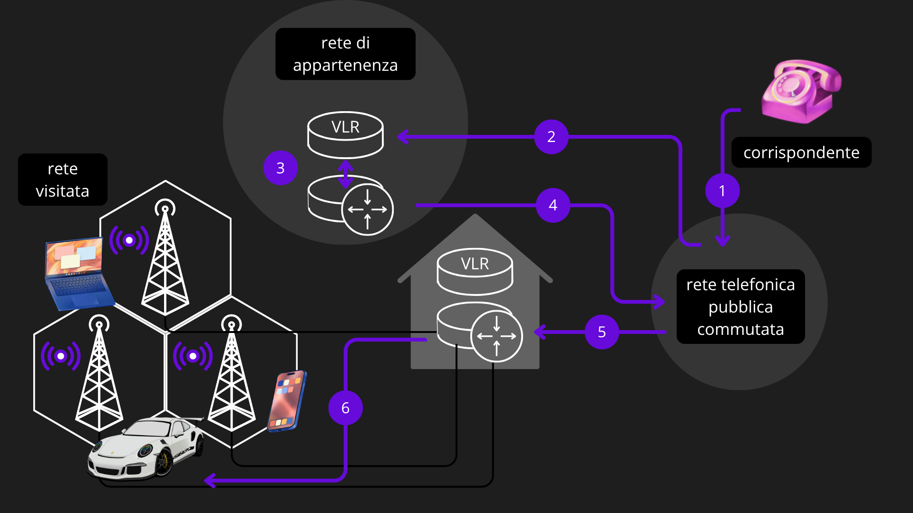
Home PLMN e Home Location Register (HLR)
Ogni utente appartiene a una Home PLMN (Public Land Mobile Network), cioè la rete dell’operatore con cui è stato sottoscritto il contratto. All’interno della rete di appartenenza è presente l’Home Location Register (HLR), un database permanente che contiene tutte le informazioni relative all’utente, tra cui il numero telefonico, il profilo dei servizi e la posizione corrente della rete nella quale il terminale risulta registrato. L’HLR rappresenta quindi il punto di riferimento permanente dell’utente e permette di localizzarlo indipendentemente dai suoi spostamenti.
Visited PLMN, VLR e MSC
Quando il dispositivo si sposta nella rete di un altro operatore entra in una Visited PLMN, cioè una rete visitata. All’interno di essa opera il Visitor Location Register (VLR), un database temporaneo che memorizza le informazioni degli utenti presenti nell’area servita. Generalmente il VLR è associato al Mobile Switching Center (MSC), il nodo responsabile della gestione delle chiamate e dell’instradamento del traffico telefonico. Quando un utente entra nella rete visitata viene registrato nel VLR, che comunica tale informazione all’HLR affinché la rete di appartenenza conosca sempre la posizione corrente del dispositivo.
Funzionamento della mobilità nel GSM
Come per Mobile IP, anche la gestione della mobilità nel GSM può essere descritta attraverso una serie di procedure fondamentali. In particolare il funzionamento può essere suddiviso in tre fasi principali:
Aggiornamento della posizione
Ogni volta che il telefono viene acceso oppure entra nella copertura di una nuova rete visitata, deve registrare la propria posizione affinché possa essere raggiunto anche dopo lo spostamento. Il terminale si collega inizialmente al VLR della rete visitata, che crea una nuova registrazione temporanea per l’utente. Successivamente il VLR comunica la presenza del dispositivo all’HLR, aggiornando la posizione corrente dell’utente. Durante questa procedura il VLR ottiene anche il profilo dei servizi autorizzati, in modo da poter gestire correttamente le future comunicazioni. Grazie a questo continuo aggiornamento, l’HLR conosce sempre quale rete sta servendo il dispositivo e può indirizzare correttamente le chiamate verso la sua posizione corrente.
Instradamento delle chiamate
Una volta aggiornata la posizione dell’utente, la rete deve essere in grado di recapitare correttamente le chiamate al terminale mobile. Quando un utente effettua una chiamata verso un numero cellulare, il numero telefonico identifica esclusivamente la rete di appartenenza del destinatario. Per questo motivo la chiamata raggiunge inizialmente l’Home MSC (Gateway MSC), che interroga l’HLR per conoscere la posizione attuale dell’utente. Se il destinatario si trova in una rete visitata, l’HLR richiede al VLR un Mobile Station Roaming Number (MSRN), cioè un numero temporaneo utilizzato esclusivamente per l’instradamento della chiamata. L’MSRN svolge un ruolo del tutto analogo al Care-of Address visto in Mobile IP: rappresenta un indirizzo temporaneo che permette di raggiungere la rete nella quale il dispositivo è effettivamente presente senza modificare il numero telefonico permanente. Ricevuto l’MSRN, l’Home MSC instaura una seconda tratta della comunicazione verso l’MSC della rete visitata, che provvede infine a instradare la chiamata verso la stazione base che sta servendo il terminale mobile. L’utente continua quindi a utilizzare sempre lo stesso numero telefonico, mentre l’intera procedura di localizzazione e instradamento rimane completamente trasparente.
Handoff tra celle
Quando il dispositivo si sposta durante una comunicazione attiva, la rete deve trasferire la chiamata dalla cella corrente a una nuova cella senza interrompere la conversazione. Questa procedura prende il nome di handoff. Le stazioni mobili misurano continuamente l’intensità del segnale ricevuto dalla stazione base corrente e da quelle vicine, inviando periodicamente tali informazioni alla rete. Sulla base di queste misurazioni e del livello di congestione delle celle adiacenti, la rete decide quando avviare il trasferimento. Lo standard GSM non impone uno specifico algoritmo decisionale, lasciando agli operatori la scelta della strategia più opportuna.
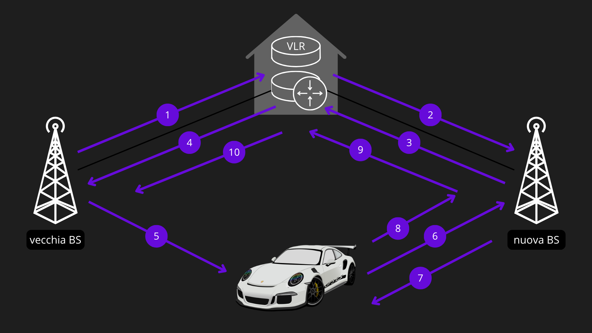
Prima di eseguire l’handoff vengono predisposte tutte le risorse necessarie nella nuova cella. La nuova stazione base riserva un canale radio e comunica all’MSC di essere pronta a ricevere il terminale. Solo a questo punto il dispositivo riceve il comando di cambiare canale radio, si sincronizza con la nuova stazione base e conferma l’avvenuto trasferimento. Terminata la procedura, l’MSC aggiorna il percorso della chiamata e rilascia le risorse che occupava nella vecchia cella. L’intero processo è progettato per risultare praticamente trasparente all’utente e ridurre al minimo l’interruzione della comunicazione.
Important
La procedura diventa più complessa quando il dispositivo si sposta tra celle appartenenti a MSC differenti. In questo caso il percorso della chiamata non viene ricostruito completamente a ogni spostamento, ma viene introdotto un Anchor MSC, che svolge un ruolo molto simile a quello dell’Anchor Foreign Agent visto come ottimizzazione di Mobile IP. L’Anchor MSC coincide con l’MSC presso cui la chiamata è stata inizialmente instaurata e rimane il punto di riferimento per tutta la durata della comunicazione. Quando il dispositivo entra nell’area di un nuovo MSC, quest’ultimo assume la gestione locale della connessione, mentre l’Anchor MSC continua a ricevere la chiamata e a reinstradarla verso l’MSC corrente. Questa soluzione evita di ricostruire l’intero percorso della chiamata a ogni spostamento dell’utente e consente di gestire la mobilità anche durante handoff ripetuti tra aree controllate da MSC differenti.